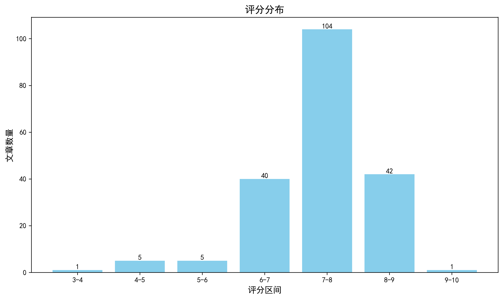

神经科学快讯·第016期 Science重磅：人类蓝/绿敏视锥视蛋白暗态结构解析，阐明日间视觉光谱调谐的分子机制 (2026-06-27)
📊 本周概览
- 头条推荐: 1 篇
- 深度解读: 101 篇
- 简要提及: 76 篇
- 跨界启发: 0 篇
- 已过滤: 170 篇
🌏 环球视野

🌍 国家/地区分布 TOP 10
| 排名 | 国家 | 文章数量 |
|---|---|---|
| 1 | United States | 241 |
| 2 | China | 123 |
| 3 | United Kingdom | 59 |
| 4 | Germany | 52 |
| 5 | Switzerland | 34 |
| 6 | Canada | 32 |
| 7 | France | 23 |
| 8 | Australia | 19 |
| 9 | Korea | 18 |
| 10 | Japan | 18 |
总计: 619 篇文章
🏢 研究机构 TOP 10
| 排名 | 机构 | 文章数量 |
|---|---|---|
| 1 | Chinese Academy of Sciences | 19 |
| 2 | Fudan University | 14 |
| 3 | Tsinghua University | 13 |
| 4 | Stanford University | 12 |
| 5 | Howard Hughes Medical Institute | 12 |
| 6 | University of Oxford | 10 |
| 7 | McGill University | 10 |
| 8 | University of Chinese Academy of Sciences | 10 |
| 9 | Zhejiang University | 10 |
| 10 | Harvard University | 9 |
📊 评分分布
| 评分区间 | 文章数量 |
|---|---|
| 3-4 | 1 |
| 4-5 | 5 |
| 5-6 | 5 |
| 6-7 | 40 |
| 7-8 | 104 |
| 8-9 | 42 |
| 9-10 | 1 |
总计: 198 篇评分文章
📈 各领域文章分布
| 领域 | 深度解读 | 简要提及 | 总计 |
|---|---|---|---|
| 未知领域 | 0 | 42 | 42 |
| 临床与转化神经科学 | 18 | 12 | 30 |
| 系统与环路神经科学 | 19 | 4 | 23 |
| 感觉与运动神经科学 | 15 | 7 | 22 |
| 分子与细胞神经科学 | 20 | 2 | 22 |
| 认知神经科学 | 14 | 7 | 21 |
| 计算与理论神经科学 | 7 | 0 | 7 |
| 发育神经科学 | 5 | 1 | 6 |
| 方法学 | 3 | 1 | 4 |
合计: 深度解读 101 篇，简要提及 76 篇，共 177 篇
🥇 头条推荐（9.0+分）
中文标题: 揭示人类日间视觉的分子基础
作者: Sarah L. Schmidt, Jakub Dostal, Saumik Sen et al.
单位: Center For Life Sciences, Paul Scherrer Institute, Villigen, Switzerland; Center For Scientific Computing, Theory And Data, Paul Scherrer Institute, Villigen, Switzerland; Extreme Light Infrastructure Eric, Eli Beamlines Facility, Dolní Břežany, Czech Republic 等
研究地区: Switzerland, Japan
关键词: 冷冻电镜, 飞秒光谱, 视蛋白, 人类, 视锥细胞, 光感受器
亮点: 结合冷冻电镜、飞秒光谱与模拟揭示人类昼光视觉中视色素的分子机制
核心优势: 首次解析人类蓝敏和绿敏视锥视蛋白暗态结构，阐明色觉差异的分子基础
研究局限: 仅涉及暗态结构，活化态和动力学细节仍需进一步研究；可能存在种属差异
目标读者: 视觉神经科学、结构生物学、GPCR信号转导、光遗传学研究者
推荐理由: 本研究通过冷冻电镜解析了人蓝敏和绿敏视锥细胞视蛋白的暗态结构，结合飞秒时间分辨光谱，首次揭示了不同视蛋白亚型光谱调谐和超快响应的分子基础。这些发现不仅阐明了日间视觉的分子机制，也为理解GPCR家族中配体结合与构象变化的动力学提供了新范式。对视觉神经科学和结构生物学领域均具有里程碑意义。
📚 精选文献（按领域分类）
临床与转化神经科学
中文标题: 工程化共生菌对肠-肝-脑轴代谢的调节
作者: Nikhil Aggarwal, Haosheng Shen, Li Ting Lee et al.
单位: National Centre For Engineering Biology (Nceb), Singapore, Singapore; Synthetic Biology Translational Research Programme, Yong Loo Lin School Of Medicine, National University Of Singapore, Singapore, Singapore; Nus Synthetic Biology For Clinical And Technological Innovation (Syncti), National University Of Singapore, Singapore, Singapore 等
资深研究者: Ming Li (h指数=72); Yock Young Dan (h指数=44)
研究地区: China
关键词: 基因工程, 微生物组, 肝性脑病, 代谢调控, 肠-肝-脑轴
亮点: 工程化益生菌同时调控氨和支链氨基酸，在肝性脑病模型中疗效优于临床药物并保护菌群多样性
核心优势: 首次通过单一工程菌平台同时纠正多种代谢紊乱，并整合多模型验证其行为改善和菌群保护效应
研究局限: 仅在两种HE模型中验证，缺乏长期安全性评估和向更大动物或人体的转化数据
目标读者: 微生物组工程、代谢疾病、神经胃肠病学和转化医学研究者
推荐理由: 该研究通过工程化乳酸菌菌株，特异性调节肝性脑病中紊乱的氨和支链氨基酸代谢，为基于肠-肝-脑轴的代谢性神经疾病提供了精准微生物干预策略。其双菌株系统分别实现氨同化与支链氨基酸合成，展示了合成生物学在神经代谢疾病治疗中的转化潜力。
中文标题: 肠道细菌代谢物咪唑丙酸加剧阿尔茨海默病病理
作者: Vaibhav Vemuganti, Jea Woo Kang, Federico E. Rey
关键词: 微生物组, 阿尔茨海默病, 代谢物, 宏基因组, 生物标志物, 临床队列
亮点: 多模态证据链揭示肠道细菌代谢物咪唑丙酸通过脑内皮损伤和tau磷酸化加剧阿尔茨海默病病理
核心优势: 首次在大型人类队列中结合遗传学、代谢组学、宏基因组学和因果动物模型，系统验证了肠道代谢物ImP在AD中的致病作用。
研究局限: 缺乏独立外部队列验证，机制仅部分在神经元和内皮中阐明，未深入小胶质细胞及免疫通路。
目标读者: 神经退行性疾病、微生物组-肠脑轴、代谢组学及神经血管生物学研究者
推荐理由: 本研究从大规模人类队列出发，结合血浆代谢组学和粪便宏基因组分析，揭示了肠道细菌代谢物咪唑丙酸（ImP）与阿尔茨海默病病理的显著关联。ImP水平升高与认知评分下降及AD生物标志物恶化相关，且纵向数据支持其因果作用。这一发现为理解肠脑轴在AD发病中的机制提供了新线索，并为开发基于微生物组的干预策略（如靶向ImP产生菌或代谢通路）奠定了基础。研究思路清晰，证据链完整，对AD早期预警和防治具有重要转化价值。
中文标题: 重新思考颞叶癫痫中的皮质肥大
作者: Cossette-Roberge H, Nguyen BT, Fadaie F et al.
关键词: 颞叶癫痫, 皮层肥大, MRI, 人类, 颞叶, 结构可塑性
亮点: 重新审视颞叶癫痫中皮层肥大的概念，整合多模态证据并提出新框架
核心优势: 系统梳理并批判性分析皮层肥大研究的争议，提出具有前瞻性的研究方向
研究局限: 依赖已有文献综述，缺乏原创实验数据支持
目标读者: 临床神经科学家、癫痫研究者、神经影像学家
推荐理由: 这项研究重新审视了颞叶癫痫中皮层肥大的现象，挑战了传统认为肥大仅代表病理改变的单一观点。通过整合结构MRI与组织病理学证据，作者提出皮层肥大可能反映代偿性可塑性或环路重组，为理解癫痫慢性进展中的结构-功能关系提供了新视角。对临床医生和系统神经科学家而言，该工作提示在解释神经影像改变时需考虑动态平衡机制。
中文标题: 肌萎缩侧索硬化症中通过翻译缺陷和应激颗粒导致的STMN2蛋白耗竭
作者: Ellis BCS, Avila AS, Huang WP et al.
关键词: STMN2, 肌萎缩侧索硬化, 翻译缺陷, 应激颗粒, 运动神经元
亮点: 揭示STMN2蛋白缺失通过翻译抑制和应激颗粒形成在ALS中的新机制
核心优势: 发现STMN2 mRNA通过应激颗粒隔离导致翻译缺陷，为ALS中TDP-43病理下游事件提供新见解
研究局限: 主要基于细胞和动物模型，人类ALS样本验证有限，且因果性链尚未完全确立
目标读者: ALS研究者、RNA生物学和神经退行性疾病领域科学家
推荐理由: 该研究揭示了ALS中STMN2蛋白通过翻译缺陷和应激颗粒形成而下调的新机制，为理解运动神经元退行性变的分子基础提供了重要线索。STMN2作为微管稳定蛋白，其缺失可能加剧轴突运输障碍，提示其可能是ALS的潜在治疗靶点。研究结合了翻译组学和细胞生物学方法，为神经退行性疾病的机制研究树立了范式。
AI-driven tripartite classification for optimizing wearable bioelectronics in depression management
深度解读 8.0/10中文标题: 人工智能驱动的三分法分类优化抑郁症管理中的可穿戴生物电子学
作者: Jakyoung Lee, Yeon-Mi Hong, Enji Kim et al.
单位: Department Of Materials Science And Engineering, Yonsei University College Of Engineering, Seoul 03722, Republic Of Korea
关键词: AI分类, 复杂系统理论, 早期预警信号, 可穿戴生物电子, 多模态生物标志物, 抑郁症
亮点: 结合软体神经探针和AI，实现抑郁症“前疾病状态”的实时识别与精准干预。
核心优势: 首次提出抑郁症可逆转的“前疾病状态”，并通过多模态可穿戴系统实现闭环管理。
研究局限: 仅基于动物模型或初步临床数据，缺乏大规模人体验证。
目标读者: 精神病学、神经工程、可穿戴生物电子学、计算精神病学研究者
推荐理由: 该研究突破传统健康-疾病二元分类，引入预疾病状态概念，通过复杂系统理论分析多模态生物标志物（电生理、行为、生物）的早期预警信号，实现抑郁症可逆阶段的识别。结合可穿戴设备进行连续监测，为精准干预时机选择提供了新范式，对情感障碍的预防性医疗具有重要转化价值。
中文标题: 负载自身抗原的聚合物微粒与B细胞结合并促进小鼠实验性自身免疫性脑脊髓炎模型中的耐受性抗原呈递
作者: Nicole Rose Lukesh, Brian G. Barbery, Kristy M. Ainslie
单位: Division Of Pharmacoengineering & Molecular Pharmaceutics, Eshelman School Of Pharmacy, Unc, Chapel Hill, Nc, Usa
研究地区: United States
关键词: 微粒技术, 抗原特异性免疫耐受, B细胞靶向, 多发性硬化, 实验性自身免疫性脑脊髓炎, 小鼠
亮点: 利用抗原负载微粒靶向B细胞实现抗原特异性免疫耐受，在小鼠MS模型中达到前所未有的治疗效果
核心优势: 首次证明靶向B细胞的微粒递送抗原可在EAE模型中诱导强效免疫耐受，同时保留抗病毒免疫能力
研究局限: 仅在单一小鼠模型（EAE）验证，使用单一抗原肽（MOG35-55），且未在更大规模或更临床前模型中测试
目标读者: 自身免疫疾病、免疫工程、多发性硬化、B细胞生物学和转化医学研究者
推荐理由: 本研究提出一种新型抗原特异性免疫耐受策略，通过抗原负载的缩醛化葡聚糖微粒靶向B细胞，在EAE小鼠模型中诱导IL-10分泌并抑制自身免疫反应。该工作直接针对MS中B细胞失调这一关键病理环节，避免了传统免疫抑制的广谱副作用，为开发不牺牲保护性免疫的抗原特异性疗法提供了新的设计思路和机制证据。
中文标题: 携带常见m.3243A>G突变的人类类器官中线粒体DNA异质性驱动皮层神经元紊乱
作者: Denisa Hathazi, Camilla Lyons, Rita Horvath
关键词: 线粒体DNA异质性, 类脑器官, 人类iPSC, 皮层神经元, MELAS, 疾病模型
亮点: 人类类器官模型揭示线粒体DNA异质性如何选择性损伤皮层深层投射神经元
核心优势: 首次在人类iPSC衍生皮质类器官中模拟MELAS突变，结合单细胞转录组揭示异质性依赖的神经元亚型特异性易损性
研究局限: 类器官模型的生理相关性有限，缺乏血管化和免疫环境；结果需在体内模型或患者中进一步验证
目标读者: 线粒体疾病、神经发育、干细胞生物学和神经病理学研究者
推荐理由: 该研究利用人类iPSC来源的脑类器官，首次在3D人脑模型中系统解析了线粒体DNA异质性（m.3243A>G突变）对皮层神经元发育和功能的影响，揭示了氧化磷酸化缺陷、钙信号紊乱和网络活动异常等关键机制。由于缺乏合适的动物模型，该工作为MELAS综合征的病理机制研究和潜在治疗靶点提供了重要的体外平台，具有很高的转化价值。
中文标题: 认知症状患者中tau与淀粉样蛋白PET的诊断影响
作者: Xin JW, Wang ZY, Guo Y et al.
关键词: PET, tau, amyloid, 阿尔茨海默病, 认知障碍, 诊断
亮点: 直接比较tau PET与淀粉样蛋白PET在认知症状患者中的诊断效能，为临床生物标志物选择提供依据
核心优势: 基于大样本临床数据系统比较两种主流PET示踪剂的诊断价值，结论具有直接的临床转化意义
研究局限: 研究设计可能受回顾性限制，且未包含纵向随访数据，难以评估长期诊断准确度
目标读者: 神经影像学、老年神经病学、认知障碍临床研究者及核医学医师
推荐理由: 该研究系统比较了tau PET与amyloid PET在认知症状患者中的诊断价值，为阿尔茨海默病的精准诊断提供了关键证据。通过直接对比两种示踪剂，研究揭示了tau PET在区分疾病阶段和预测认知下降方面可能更具优势，有助于临床决策和临床试验的受试者筛选。对于神经科学领域，这项工作的意义在于强化了tau病理作为诊断和预后生物标志物的地位，并为未来多示踪剂联合分析提供了重要参考。
中文标题: 强迫症中多维脑结构改变的区域、功能和转录组解码
作者: Leonardo Cardoso Saraiva, João R. Sato, Carolina Cappi
关键词: 强迫症, 多模态融合, fMRI, 转录组学, 前额叶, 纹状体
亮点: 多模态解码揭示强迫症脑结构改变的分子和功能基础
核心优势: 整合区域、功能和转录组三层面，提供了理解强迫症脑结构改变的综合视角。
研究局限: 样本量有限且跨样本泛化性需进一步验证。
目标读者: 神经影像、神经遗传学、计算神经科学和精神疾病研究者
推荐理由: 该研究通过整合结构影像、功能连接与转录组数据，系统解码了强迫症患者脑结构改变的多维度特征，揭示了特定脑区（如前额叶-纹状体环路）的分子与功能基础。其多模态融合策略为理解精神疾病的脑机制提供了可推广的分析框架，并有望识别更精准的影像-分子生物标志物。
中文标题: 右侧杏仁核消融减少创伤后应激障碍患者的适应不良性负面解释偏倚和症状
作者: Tao Xie, Sanne J. H. van Rooij, Jon T. Willie
单位: Louis, Mo, Usa; Department Of Neurological Surgery, Washington University School Of Medicine, St
研究地区: United States
关键词: 人类, 杏仁核, 射频消融, PTSD, 负性解释偏差, SEEG
亮点: 首次在人类中建立右侧杏仁核与PTSD消极解释偏倚的因果关系，并展示消融治疗潜力
核心优势: 前瞻性单病例设计结合颅内电生理记录，提供直接因果证据
研究局限: 单病例(n=1)研究，缺乏对照组，结果普适性有限
目标读者: 情绪神经科学、PTSD临床研究者、神经外科医生、认知科学研究者
推荐理由: 本研究通过一例难治性癫痫合并PTSD患者的立体脑电图引导下右侧杏仁核射频消融术，首次提供了杏仁核在人类负性解释偏倚中因果作用的直接证据。消融后患者对模糊刺激的威胁性解读显著减少，同时PTSD症状（特别是再体验和回避）得到持续改善。该工作不仅深化了杏仁核在认知扭曲中作用的理解，也为针对特定脑区的精准神经外科干预治疗精神疾病提供了可行性示范，对临床转化神经科学具有重要价值。
Aggression in epilepsy and sleep: from historical accounts to brain networks and human behaviour.
深度解读 7.5/10中文标题: 癫痫和睡眠中的攻击行为：从历史记载到脑网络和人类行为
作者: Villani F, Mattioli P, Bartolomei F et al.
关键词: 癫痫, 攻击行为, 睡眠, 脑网络, 人类, 边缘系统
亮点: 从历史记载到脑网络，系统整合癫痫与睡眠中攻击性的神经机制
核心优势: 跨越历史与现代，提出癫痫-睡眠-攻击性的脑网络整合框架
研究局限: 综述性质，缺乏新实证数据，部分观点可能偏向假设
目标读者: 神经病学、癫痫病学、睡眠医学和认知神经科学研究者
推荐理由: 该研究系统梳理了从古代至现代对癫痫与睡眠中攻击行为的历史认知，并结合现代脑网络理论重新诠释其神经基础。通过整合临床观察、神经影像及行为学证据，论文揭示了癫痫发作、睡眠周期与攻击行为之间的动态环路交互，为临床管理及神经机制研究提供了跨学科视角。对理解边缘系统在异常放电与行为调控中的角色具有重要参考价值。
中文标题: 具有电压依赖性突触功能的计算框架解释功能性电刺激疗法中LTP主导的可塑性
作者: Howard, M. C., Masani, K., Lankarany, M.
关键词: 计算建模, 功能性电刺激, 突触可塑性, LTP, 神经康复, 电压依赖性突触
亮点: 电压依赖性可塑性规则解释了FES疗法为何可靠诱导LTP而非LTD
核心优势: 提供了一个新颖的计算框架，整合电压依赖性突触可塑性和多尖峰相互作用，系统揭示了FES诱导LTP主导可塑性的机制。
研究局限: 研究完全基于计算模拟，缺乏体内或体外实验验证，且模型参数可能无法完全捕捉生物复杂性。
目标读者: 计算神经科学、神经康复、突触可塑性研究者
推荐理由: 该研究构建了一个电压依赖性突触功能的计算框架，成功解释了功能性电刺激疗法中LTP占主导的突触可塑性机制。这一模型将临床康复效果与突触水平的Hebbian学习规则联系起来，为优化FES参数设计提供了理论依据，对理解神经损伤后运动功能恢复的细胞机制具有重要价值。
中文标题: 急性芬太尼毒性：从阿片诱导到缺氧介导的病理生理学
作者: Lewis T, Haouzi A, Reinhardt A et al.
关键词: 芬太尼, 呼吸抑制, 缺氧, 阿片毒性, 病理生理学
亮点: 挑战芬太尼毒性经典观点，提出缺氧介导新机制
核心优势: 整合生理与病理生理视角，推动对芬太尼毒性机制的理解
研究局限: 缺乏系统综述的广度，证据来源有限
目标读者: 神经生理学家、毒理学家、临床医生
推荐理由: 本研究系统解析了芬太尼急性毒性中呼吸抑制与低氧介导病理的交互作用，突破了传统仅关注阿片类呼吸抑制的局限，揭示了低氧血症继发的多器官损伤机制。对神经科学研究者而言，该工作为理解阿片类药物致死机制提供了整合性框架，并提示未来干预策略应同时靶向阿片受体和低氧通路。
中文标题: 低强度经颅超声刺激改善缺血性中风小鼠的运动行为并调节皮层功能网络连接
作者: Wan S, Wang Q, Wang Y et al.
关键词: 经颅超声刺激, 缺血性中风, 小鼠, 运动行为, 功能网络连接, 皮层
亮点: 低强度超声无创调控皮质功能网络，改善脑卒中运动功能
核心优势: 结合行为学与功能网络成像，从系统层面揭示超声刺激的治疗潜力。
研究局限: 需要进一步验证长期效应及临床转化可行性。
目标读者: 神经调控、脑卒中康复、功能连接成像研究者
推荐理由: 本研究利用低强度经颅超声刺激（LITUS）干预缺血性中风小鼠，发现其能显著改善运动功能，并伴随皮层功能网络连接的重塑。这种非侵入性神经调控手段为中风康复提供了新的临床转化潜力，同时揭示了超声刺激调节全脑网络动力学的作用机制，对理解脑刺激与神经可塑性的关系具有重要意义。
SECmeres outperform extracellular vesicles as potential blood RNA biomarkers for Alzheimer’s disease
深度解读 7.3/10中文标题: SECmeres 作为阿尔茨海默病潜在血液RNA生物标志物优于细胞外囊泡
作者: Edgar Gonzalez-Kozlova, Swapnil Tichkule, Navneet Dogra
关键词: 血液RNA生物标志物, SECmeres, 细胞外囊泡, 阿尔茨海默病, 人类, 生物标志物开发
亮点: 发现SECmeres作为新型血液RNA标志物，在阿尔茨海默病诊断中优于传统细胞外囊泡标志物。
核心优势: 首次系统比较SECmeres与细胞外囊泡作为AD血液RNA标志物的性能，并证明其优越性，为无创诊断提供新方向。
研究局限: 缺乏独立大样本验证队列，且对SECmeres生物学机制及特异性来源探讨不足。
目标读者: 阿尔茨海默病研究者、液体活检与生物标志物领域科学家、神经退行性疾病临床转化研究者
推荐理由: 该研究首次系统比较了SECmeres与传统细胞外囊泡作为阿尔茨海默病血液RNA标志物的潜力，发现SECmeres在诊断准确性和稳定性上均显著优于后者。这项工作为AD的无创早期筛查和病程监测提供了新的液体活检靶点，同时也为血液RNA生物标志物的方法学标准化指明了方向，对神经科学临床转化具有直接推动作用。
中文标题: 从发现到转化：为《神经生理学杂志》规划路线
作者: Mantilla CB
关键词: 转化研究, 神经生理学, 期刊方向, 临床神经科学, 基础发现
亮点: 为神经生理学期刊绘制从基础发现到临床转化的路线图
核心优势: 前瞻性地为期刊定调，强调转化神经科学的重要性，具有指导性
研究局限: 缺乏具体数据和实验支持，属于观点性文章，创新性有限
目标读者: 神经生理学研究者、转化医学工作者、期刊编辑和决策者
推荐理由: 该文为《神经生理学杂志》的未来发展绘制了清晰路线图，强调从基础神经生理发现到临床转化的关键路径。对于关注神经科学临床应用的读者，本文提供了如何将实验室成果推向临床实践的思考和策略，具有重要的指引价值。
中文标题: ALS患者上运动神经元兴奋性变化的直接证据
作者: Di Lazzaro V, Pellegrino G, Corp DT et al.
关键词: ALS, 运动神经元, 过度兴奋, 直接记录, 电生理, 人类
亮点: 直接记录皮质脊髓输出揭示ALS上运动神经元高兴奋性和抑制降低的直接证据
核心优势: 独特机会获得直接神经生理记录，验证了长期推测的上运动神经元兴奋性改变
研究局限: 单病例研究，样本量极小，无统计检验，结论的外推性有限
目标读者: ALS研究、运动神经元疾病、经颅磁刺激（TMS）研究者和临床神经生理学家
推荐理由: 该研究通过罕见的机会直接记录ALS患者的上运动神经元，证实了其兴奋性改变，突破了传统TMS研究无法区分上下运动神经元贡献的局限。为理解ALS的病理生理机制提供了直接的细胞水平证据，对开发针对上运动神经元过度兴奋的治疗策略具有重要意义。
中文标题: 结合死后和神经影像学测量大脑淀粉样变性以加速基因组发现
作者: Wang TC, Archer DB, Ali M et al.
关键词: 死后组织, 神经影像, 人类, 淀粉样变性, 基因组学, 全基因组关联研究
亮点: 整合死后与活体脑淀粉样蛋白测量以加速基因组发现
核心优势: 多模态数据融合提升遗传关联研究的统计效力和生物学解析度
研究局限: 依赖死后样本的可用性和匹配性，可能引入选择偏倚
目标读者: 神经遗传学、阿尔茨海默病研究、生物信息学及神经影像学研究者
推荐理由: 该研究通过整合死后脑组织病理与活体神经影像标志物，显著提升了脑淀粉样变性的遗传发现效力。这种多模态策略不仅克服了单一模态的样本量限制，还揭示了与阿尔茨海默病病理进程相关的新基因位点。对基因组学和神经影像领域都具有方法学示范意义，有望加速精准医学的转化应用。
中文标题: 强迫症大鼠模型中的行为与神经动力学
作者: Hanzlik, A. F., Szczurowska, E. K., Rydzykova, T. et al.
摘要: 揭示强迫症模型中行为刻板与海马-前扣带回环路theta节律协调稳定性增加之间的平行动态
优势: 多尺度（行为、单细胞、细胞对、LFP）同时记录和分析，展示了theta节律稳定性与行为重复性的时间关联 局限: 基于单一大鼠模型（quinpirole），未直接测量因果关系，且样本量未提及，实验结果向人类的转化性需谨慎 受众: 计算神经科学、系统神经科学、精神疾病模型研究者、OCD机制研究者
中文标题: 利用人类海马体建模自身免疫性脑炎
作者: Kim CD, Wang S, Placantonakis DG
摘要: 利用人海马组织模型研究自身免疫性脑炎的病理机制
优势: 使用人源组织模型，更贴近临床病理生理过程 局限: 缺乏具体实验细节，模型有效性及泛化性待验证 受众: 神经免疫学、神经病理学、转化医学研究者
中文标题: 小脑性共济失调中音高感觉运动适应受损
作者: Slis A, Parrell B
摘要: 首次直接证明小脑共济失调患者声音音高感知运动适应受损
优势: 将小脑运动学习缺陷具体映射到声音控制的感知运动适应环节 局限: 未涉及神经机制的直接测量，样本量受限 受众: 运动学习、小脑功能、言语感知研究者
中文标题: 神经调控策略克服脑性瘫痪的多种不可避免障碍
作者: Hastings SD, Zhong H, Kijima K et al.
摘要: 单病例研究挑战脑瘫传统观念，揭示非侵入性神经调控可引发多系统适应性改善。
优势: 首次系统性展示经皮脊髓神经调控结合本体感觉训练引发跨运动、自主、认知等多领域渐进式可逆改善。 局限: 单病例设计，无对照组，缺乏盲法和量化指标，证据强度有限。 受众: 脑瘫康复、神经调控、神经可塑性、发育神经科学研究者
中文标题: fMRI BOLD周转率（TBOLD）作为神经炎症的代理指标
作者: Christova P, James LM, Georgopoulos AP
摘要: 提出TBOLD作为神经炎症的潜在无创影像指标，基于与CRP和IL-6的显著关联
优势: 首次在大样本中系统验证了TBOLD与系统性炎症标志物的正相关，为神经炎症的影像学评估提供了新方向 局限: 仅基于相关性分析，缺乏直接神经炎症标志物（如PET或CSF指标）的验证，因果推断受限 受众: 神经影像学、神经免疫学、老化研究和转化神经科学研究者
中文标题: 海马结构特征与记忆引导注意的协变取决于海马硬化的侧别
作者: Salvato G, De Maio G, Bertolotti C et al.
摘要: 利用海马硬化患者揭示海马结构侧化与记忆引导注意力的特异关联
优势: 直接考察单侧海马损伤对记忆-注意力交互的影响，提供因果证据 局限: 样本可能有限，且海马硬化患者可能伴随其他病理变化，影响泛化 受众: 认知神经科学、癫痫研究、神经影像学领域的研究人员
Relative frequencies of muscle specific kinase antibody myasthenia in 46 centres worldwide.
简要提及 6.2/10中文标题: 全球46个中心中肌肉特异性激酶抗体重症肌无力的相对频率
作者: Vincent A, Badi R, Barisic N et al.
摘要: 全球46个中心首次系统揭示MuSK抗体重症肌无力的相对频率差异
优势: 大规模多中心国际合作，提供罕见的全球流行病学数据 局限: 各中心检测方法和诊断标准不完全一致，可能引入偏倚 受众: 神经科医生、神经免疫学研究人员、流行病学家
Graph-based analysis of inflammatory profiles in New Onset Refractory Status Epilepticus (NORSE)
简要提及 6.2/10中文标题: 基于图分析的新发难治性癫痫持续状态（NORSE）炎症特征研究
作者: Linon Denis, Martin Guillemaud, Vincent Navarro et al.
摘要: 图聚类分析cNORSE炎症谱，助力个性化免疫治疗
优势: 首次将图聚类方法应用于cNORSE细胞因子谱分析，并开发临床决策支持工具 局限: 样本量小，缺乏独立验证队列，方法学创新有限 受众: 神经免疫学、癫痫病学、临床生物信息学研究者
High-Frequency Spatial Feature Fusion with 3D CNN for Early Stage Schizophrenia Classification
简要提及 5.7/10中文标题: 基于3D CNN的高频空间特征融合用于早期精神分裂症分类
作者: Akhtar, K., Mahadevan, A.
摘要: 高频空间特征与Laplacian核初始化协同提升精神分裂症分类性能
优势: 巧妙结合HiFi高通滤波与Laplacian核初始化，在小模型上实现分类提升 局限: 仅使用单一数据集，准确率不高，且缺乏独立验证与临床相关性分析 受众: 计算神经科学、精神疾病影像学研究者
Reply: Cerebrovascular contributions to the 'vulnerable' medial temporal lobe T-N phenotype.
简要提及 4.8/10中文标题: 回复：脑血管对“脆弱”内侧颞叶T-N表型的贡献
作者: Das SR, Lyu X, Wolk DA
摘要: 对脑小血管病在颞叶内侧T-N表型中角色的观点性回应
优势: 聚焦于神经血管耦合的特定假说，提供了有针对性的批判性讨论 局限: 作为回复文章，内容较短，缺乏系统性综述的广度和深度 受众: 研究阿尔茨海默病、小血管病和颞叶内侧退化的神经科学家和临床医生
中文标题: 一项关于经颅光生物调节疗法干预失眠大学生的初步研究
作者: Jiangshan He, Lianghua Zhang, Dan Liang et al.
资深研究者: Dan Liang (h指数=25); Lei Zheng (h指数=70)
摘要: 首次尝试揭示经颅光生物调节对失眠大学生神经机制的初步影响
优势: 聚焦失眠的神经机制（前额叶低激活）与tPBM疗法的关联，提出潜在的下行调控通路 局限: pilot研究，样本量小，缺乏随机对照和多模态神经影像验证，发表于预印本平台 受众: 睡眠障碍、神经调控、大学生心理健康领域的研究者
中文标题: 基于机器学习的阿尔茨海默病靶点抑制剂预测建模
作者: Nalin Arora, Mehak Gopal
摘要: 利用机器学习预测阿尔茨海默病靶点抑制剂，AUC-ROC均超0.9
优势: 针对BACE-1、AChE、GSK-3β三个靶点建立高精度预测模型 局限: 缺乏湿实验验证，数据来源和化学多样性不明确 受众: 计算药物发现、阿尔茨海默病研究者
分子与细胞神经科学
中文标题: DNA修复驱动顺铂诱导的神经元死亡
作者: William J. Nathan, Chuanyuan Chen, Rosy Sakr et al.
单位: Laboratory Of Genome Integrity, National Cancer Institute, Nih, Bethesda, Md 20892, Usa; Section On The Development Of Neurodegeneration, Eunice Kennedy Shriver National Institute Of Child Health And Human Development, Nih, Bethesda, Md 20892, Usa; Institute Of Biological Sciences, Federal University Of Juiz De Fora, Juiz De Fora, 36036-900 Mg, Brazil 等
资深研究者: Chuanyuan Chen (h指数=11); Claire E. Le Pichon (h指数=27)
研究地区: United States, Netherlands, Sweden
关键词: DNA修复, 顺铂, 神经元死亡, 核苷酸切除修复, dNTP池, 神经毒性
亮点: 揭示化疗药物顺铂诱导神经元死亡的全新机制：核苷酸切除修复因dNTP匮乏反而促进死亡
核心优势: 首次发现NER在神经元中发挥致死作用，并确定dNTP耗竭为关键脆弱性，提供潜在治疗靶点
研究局限: 主要基于小鼠模型和体外实验，人类神经元验证有限；长期核苷酸补充的安全性未评估
目标读者: 神经科学家、癌症生物学家、DNA修复研究者、药理学和毒理学研究者
推荐理由: 该研究颠覆了核苷酸切除修复（NER）在神经元中的传统认知：在分裂细胞中起保护作用的NER，因神经元低dNTP池而成为顺铂神经毒性的关键驱动力。这一发现解释了铂类药物选择性损伤有丝分裂后组织的机制，并为开发靶向NR2F1等表观调控因子的神经保护策略提供了分子基础。对理解DNA损伤应答的细胞类型特异性具有重要价值。
中文标题: 初级纤毛在中枢神经系统发育和神经环路功能中的演化作用：从人类疾病到分子基础
作者: Noble AR, Doherty D, Stoeckli E et al.
关键词: 初级纤毛, 神经发育, 信号通路, 人类疾病, 小鼠模型, 环路功能
亮点: 整合原纤毛在CNS发育和神经环路功能中的多维度角色，从人类疾病到分子机制的系统性综述。
核心优势: 全面覆盖原纤毛在神经发育和功能中的最新进展，结合人类遗传学与基础生物学，提出未来研究方向。
研究局限: 批判性整合不足，部分内容偏重描述性，缺乏对争议点的深入辨析。
目标读者: 神经发育生物学、纤毛生物学、神经环路和疾病机制研究者
推荐理由: 本文系统梳理了初级纤毛在CNS发育及神经环路功能中的演变角色，从人类纤毛病的临床表型切入，深入探讨了纤毛介导的Shh、Wnt等信号通路如何调控神经发生、迁移和突触形成，并揭示了纤毛在成年神经元可塑性和环路维持中的新功能。为理解脑发育障碍及精神疾病的分子机制提供了关键框架。
Single-cell multiomics of neuron activation reveals context-specific genetics of brain disorders
深度解读 8.2/10中文标题: 神经元激活的单细胞多组学揭示脑疾病背景依赖性遗传学
作者: Lifan Liang, Siwei Zhang, Zicheng Wang et al.
单位: Department Of Human Genetics, The University Of Chicago, Chicago, Il, Usa; Center For Psychiatric Genetics, Endeavor Health Research Institute, Evanston, Il, Usa
资深研究者: Siwei Zhang (h指数=66)
研究地区: United States
关键词: 单细胞多组学, 人类iPSC, 神经元激活, 染色质可及性, eQTL, 神经精神疾病
亮点: 大规模单细胞多组学揭示神经元激活依赖性遗传效应为脑疾病提供新见解
核心优势: 整合100个供体的单细胞转录组和表观基因组，系统鉴定活动依赖性遗传变异及其对神经精神疾病遗传度的贡献
研究局限: 基于体外iPS细胞模型，体内验证尚不充分；发现的关联缺乏因果关系实验证据
目标读者: 神经遗传学、功能基因组学、神经精神疾病研究者
推荐理由: 该研究通过大规模单细胞多组学分析，在神经元激活的特定上下文下揭示了神经精神疾病相关遗传变异的调控效应，弥补了传统静态遗传研究的不足。其发现的活动依赖性eQTL和染色质可及性QTL为理解脑疾病的风险机制提供了新维度，对分子和系统神经科学均有重要参考价值。
中文标题: SynaptoTagMe，一种在单细胞分辨率下体内映射和调节神经递质传递的工具箱
作者: Cuentas-Condori A, Chanabá-López P, Thomas M et al.
关键词: 突触标记, 神经递质, 单细胞分辨率, 在体成像, 光遗传学, 工具包
亮点: 首个实现单细胞分辨率下体内神经递质映射与调控的工具包
核心优势: 独特的单细胞精度结合体内活性依赖性标记与光遗传调控功能，为解析神经回路提供新维度。
研究局限: 依赖转基因动物模型和特定神经递质系统，泛化性及长期稳定性可能受限，且缺少多模态验证数据。
目标读者: 突触生物学、神经回路功能成像、工具开发及行为神经科学研究者
推荐理由: 该研究开发了SynaptoTagMe工具包，首次实现了在体单细胞分辨率下对神经递质传递的精确映射与调控。通过结合遗传编码的突触标签和光遗传学操作，该工具能够特异性标记和调节单个突触的活性，为解析突触可塑性、神经环路功能以及神经系统疾病的突触机制提供了前所未有的方法学支持。这一技术突破将推动分子与细胞神经科学从群体水平向单突触水平的研究范式转变。
中文标题: 小鼠模型中自噬的可逆抑制揭示神经元恢复力
作者: Tomoya Eguchi, Manabu Abe, Takuya Tomita et al.
单位: Department Of Cellular Neurobiology, Brain Research Institute, Niigata University, Niigata, Japan; Department Of Biochemistry And Molecular Biology, Graduate School And Faculty Of Medicine, The University Of Tokyo, Tokyo, Japan; Division Of Protein Metabolism, Institute Of Medical Science, The University Of Tokyo, Tokyo, Japan
研究地区: Japan
关键词: 自噬, 小鼠, 可逆调控, 蛋白组学, 转录组学, 神经元
亮点: 揭示神经元在自噬抑制后功能与质量可逆恢复的韧性机制
核心优势: 建立可逆调控自噬的小鼠模型，直接证明神经元功能损伤的可恢复性
研究局限: 仅在小鼠模型验证，且自噬抑制持续时间可能影响可逆性；临床转化尚远
目标读者: 神经退行性疾病、自噬生物学、细胞质量控制领域的研究者
推荐理由: 该研究通过构建可逆调控自噬的小鼠模型，揭示了神经元在自噬抑制后的蛋白组和转录组变化、包涵体积累及轴突肿胀均可被逆转。这一发现挑战了神经元损伤不可逆的传统观点，为神经退行性疾病的治疗提供了新的时间窗口和干预策略，强调了细胞自主质量控制系统在神经元可塑性中的关键作用。
中文标题: 天然致幻剂的化学生态学与趋同进化：从生态防御到保守的神经靶点
作者: Wang Y, Wang H, Lin C et al.
关键词: 化学生态, 趋同进化, 致幻剂, 5-HT2A受体, 保守神经靶点, 生态防御
亮点: 从化学生态学视角系统整合天然致幻剂的趋同进化与保守神经靶点
核心优势: 提出跨学科框架，将生态防御机制与神经药理学靶点联系起来，视角新颖
研究局限: 作为综述，缺乏实验验证，部分推论可能基于间接证据
目标读者: 神经科学家、化学生态学家、进化生物学家及精神药理学研究者
推荐理由: 该研究从化学生态学和进化视角重新审视天然致幻剂，揭示了其在生物防御中的起源与保守的神经靶点（如5-HT2A受体）。这一跨学科分析不仅深化了对神经递质系统进化的理解，也为精神疾病药物开发提供了进化框架，具有重要的分子神经科学价值。
中文标题: 终末施万细胞调节小鼠突触前囊泡稳态但不影响神经肌肉接头完整性
作者: Kim, H., Kim, S.-Y., Yoo, K. et al.
关键词: 单细胞转录组, CreERT2小鼠模型, 终末施万细胞, 神经肌肉接头, 突触囊泡稳态, 遗传学工具
亮点: 首次鉴定tSC特异性标记Col20a1并建立遗传工具，揭示tSC在突触前囊泡稳态中的精确调控作用
核心优势: 通过单细胞转录组发现并验证了Col20a1作为tSC专属标记，开发了特异性遗传模型，结合多模态实验明确区分了tSC对突触结构与功能的不同贡献。
研究局限: 研究仅在出生后成熟窗口期进行，未探索发育早期或老年阶段的作用；且缺乏tSC缺失后回补实验来验证其充分性。
目标读者: 神经肌肉生物学、突触传递、胶质细胞生物学研究人员
推荐理由: 该研究通过单细胞转录组学鉴定出Col20a1作为终末施万细胞(tSC)的高度特异性标记，并构建了Col20a1-CreERT2敲入小鼠模型，首次实现了在体内对tSC的精准遗传操作。利用该工具，发现tSC特异性调控突触前囊泡稳态，但对神经肌肉接头结构完整性非必需。这一工作不仅揭示了tSC在突触传递中的新功能，也为神经胶质细胞研究提供了关键的遗传工具，对理解突触维持和神经肌肉疾病的机制具有重要意义。
Isoform-specific steric zippers drive aberrant assembly and mislocalization of shortened TDP-43
深度解读 8.0/10中文标题: 异构体特异性拉链驱动缩短的TDP-43的异常组装和错误定位
作者: Katie E. Copley, Megan M. Dykstra, Morgan R. Miller et al.
单位: Department Of Biochemistry And Biophysics, Perelman School Of Medicine, University Of Pennsylvania, Philadelphia, Pa, Usa
资深研究者: James Shorter (h指数=80)
研究地区: United States
关键词: TDP-43, ALS, 蛋白质聚集, 剪接异构体, 运动神经元, steric zipper
亮点: 揭示短TDP-43特异性steric zippers驱动聚集和错误定位的新机制
核心优势: 首次鉴定sTDP-43的C端尾部的steric zippers是其聚集和胞质错误定位的关键驱动因素，而非核输出信号
研究局限: 主要基于体外和细胞实验，缺乏体内动物模型验证，且未探讨这些机制在患者组织中的直接证据
目标读者: 神经退行性疾病研究者、ALS/FTD领域学者、蛋白聚集机制研究人员
推荐理由: 该研究揭示了缩短的TDP-43（sTDP-43）剪接异构体通过特异性steric zippers驱动异常聚集和错误定位，尽管其大部分prion样结构域被替换。这一机制为ALS等神经退行性疾病中TDP-43病理的多样性提供了新的分子解释，并提示sTDP-43在运动神经元中的富集可能通过独特的聚集途径致病。研究结合结构生物学与细胞模型，为开发针对特定异构体的治疗策略奠定了基础。
Focal astrocyte Kir4.1 loss drives seizures, spreading depolarizations and postictal impairments
深度解读 7.9/10中文标题: 局灶性星形胶质细胞Kir4.1缺失导致癫痫发作、扩散性去极化和发作后功能障碍
作者: Codadu, N. K., Gao, Y., Tyurikova, O. et al.
关键词: 星形胶质细胞, Kir4.1, 癫痫, 扩散性去极化, 钾缓冲, 小鼠
亮点: 局灶性星形胶质细胞Kir4.1缺失驱动癫痫和扩散性去极化，揭示钾稳态失衡的关键作用
核心优势: 综合运用光遗传学、石墨烯微晶体管阵列和慢性DC耦合遥测，首次在清醒动物中证明局灶性星形胶质细胞Kir4.1缺失足以引发自发癫痫和扩散性去极化，并建立其与发作后功能障碍的强关联。
研究局限: 预印本未经同行评审；仅考察成年小鼠海马局灶性敲低，未探索发育期或全身性缺失；行为学评估相对简单，缺乏更精细的发作后行为分析。
目标读者: 癫痫神经生物学、星形胶质细胞生理学、神经电生理学和发作后状态研究者
推荐理由: 该研究通过多种动物模型和细胞特异性基因操作，确立了星形胶质细胞Kir4.1钾通道缺失是癫痫发作及扩散性去极化的直接触发因素，并揭示了其对发作后神经功能损伤的因果贡献。这一发现将星形胶质细胞功能障碍从癫痫的伴随现象提升为核心病理机制，为开发针对胶质细胞的新型抗癫痫策略提供了明确的分子靶点。对理解脑内钾稳态失衡在神经元超兴奋性及传播性抑制中的作用也具有重要理论价值。
中文标题: IRE1通过核糖体相关质量控制调控ALS/FTD中TDP-43/TARDBP的蛋白质稳态
作者: Liu D, Li Y, Huang S et al.
资深研究者: Li Y (h指数=60)
关键词: IRE1, TDP-43, 蛋白质稳态, 核糖体相关质量控制, ALS/FTD, 细胞培养
亮点: 揭示IRE1通过核糖体相关质量控制调控TDP-43蛋白稳态的新机制，为ALS/FTD提供潜在治疗靶点
核心优势: 首次将IRE1的RNase活性与核糖体相关质量控制的TDP-43降解途径联系起来，机制新颖且具有转化潜力
研究局限: 目前主要基于细胞和动物模型，缺乏ALS/FTD患者样本的直接验证，且IRE1在体内的具体调控细节尚需进一步阐明
目标读者: ALS/FTD领域研究者、蛋白质稳态与RNA结合蛋白病理机制研究人员、神经退行性疾病转化科学家
推荐理由: 该研究揭示了IRE1通过核糖体相关质量控制（RQC）调控TDP-43蛋白质稳态的新机制，为理解ALS/FTD中TDP-43病理聚集提供了关键分子通路。IRE1的RQC功能独立于传统的UPR信号，提示其作为治疗靶点的潜力。工作结合了蛋白质组学、核糖体分析和细胞模型，为神经退行性疾病的蛋白质质量控制研究开辟了新方向。
中文标题: 一个腰带扣检查点调控肉毒神经毒素中毒的发生
作者: Baohua Chen, Linfeng Gao, Rongsheng Jin
单位: Jin@Uci; Department Of Physiology And Biophysics, University Of California, Irvine, Irvine, Ca, Usa
研究地区: United States
关键词: 肉毒杆菌神经毒素, 蛋白构象动态, 跨膜转运, 神经递质释放, 结构生物学, 起效速度调控
亮点: 发现肉毒毒素作用起始的“腰带扣”检查点，揭示快慢毒素差异根本原因
核心优势: 蛋白工程改造实现加速毒素起效，为快速肉毒毒素药物设计提供新思路
研究局限: 机制细节可能还需更多体内验证，工程化毒素的安全性需进一步评估
目标读者: 肉毒毒素研究者、神经药理学、蛋白质工程、结构生物学领域
推荐理由: 该研究揭示了肉毒杆菌神经毒素（BoNT）起效速度差异的结构基础：BoNT/E更灵活的结构域‘belt’促进了轻链更快转运至神经元胞质，而一个‘belt-buckle’检查点则负向调控此过程。这一发现不仅阐明了毒素作用动力学的分子机制，还为设计快速起效的肉毒毒素制剂提供了新的靶点，具有重要的临床转化价值。
中文标题: ZMYND11缺失导致兴奋性皮质神经元的选择性易损性：揭示神经发育障碍风险的细胞类型特异性机制
作者: Chang, X., McKinley, M., Li, W. et al.
关键词: 人多能干细胞, 皮层, 兴奋性神经元, 神经发育障碍, 染色质调控, 电生理
亮点: 兴奋性神经元在ZMYND11缺失下的选择性超兴奋性揭示神经发育障碍E:I失衡的细胞类型特异性机制
核心优势: 明确区分兴奋性与抑制性神经元对同一风险基因的不同分子响应，确定MYND结构域关键作用
研究局限: 基于体外分化模型，缺乏体内动物模型验证，且机制细节如RBFOX调控因果性未完全建立
目标读者: 神经发育障碍研究者、人类干细胞生物学、表观遗传学、系统神经科学
推荐理由: 该研究利用人多能干细胞衍生模型，揭示了ZMYND11缺失对兴奋性皮层神经元而非抑制性神经元的选择性脆弱性，并证明其通过染色质去抑制引发过度兴奋。这一细胞类型特异性的表观遗传调控机制为理解神经发育障碍的E:I失衡根源提供了新视角，并提示针对特定神经元亚型的治疗策略可能性。
中文标题: 人小胶质细胞中线粒体未折叠蛋白反应破坏神经元-胶质细胞通讯并促进衰老
作者: Maria Jose Perez J, Alicia Lam, Michela Deleidi
关键词: iPSC, 小胶质细胞, 线粒体应激, 未折叠蛋白反应, 神经元-胶质通讯, 衰老
亮点: 人类小胶质细胞线粒体应激通过代谢重塑驱动衰老并破坏神经通讯
核心优势: 首次在人类小胶质细胞中揭示UPR mt激活导致S-腺苷甲硫氨酸耗竭和脂质重塑，并利用多细胞模型证明其破坏神经元-胶质细胞通讯
研究局限: 限于体外人类模型，缺乏体内或原代组织验证；机制细节（如下游信号通路）需进一步解析
目标读者: 神经退行性疾病、线粒体应激和胶质细胞生物学研究者
推荐理由: 本研究首次在人类iPSC来源的细胞模型中揭示，小胶质细胞的线粒体未折叠蛋白反应（UPRmt）会破坏神经元-胶质细胞通讯并促进衰老表型，与简单生物中胶质UPRmt的保护作用相反。这一发现为理解人类大脑衰老和神经退行性疾病的机制提供了新的细胞类型特异性视角，并提示靶向小胶质细胞线粒体应激可能成为治疗策略。
中文标题: 4-苯基丁酸联合基因增强：一种挽救SLC6A1变异相关发育性和癫痫性脑病的双重疗法
作者: Delahanty, A. J., James, K. C., Song, Z. et al.
关键词: 基因治疗, 化学伴侣, GABA转运体, 癫痫, 错义突变, 蛋白质折叠
亮点: 化学伴侣与基因增补双管齐下，为SLC6A1突变相关癫痫提供精准治疗新策略
核心优势: 首次在SLC6A1 A305V变异模型中验证PBA化学伴侣与GAT-1基因增补的协同作用，提供了可临床转化的两步精准医学框架。
研究局限: 研究局限于单一患者变异和体外/细胞模型，缺乏体内动物模型验证，且剂量反应范围有限。
目标读者: 癫痫遗传学、神经药理学、基因治疗和转化医学研究者
推荐理由: 该研究针对SLC6A1错义突变导致的发育性癫痫性脑病，提出4-苯基丁酸（PBA）联合基因增强的双重疗法。PBA作为化学伴侣和HDAC抑制剂，可纠正GAT-1蛋白的折叠缺陷和运输障碍，而基因增补则弥补功能单倍体不足。研究为个体化精准治疗提供了机制依据和临床前数据，具有重要的转化价值。
中文标题: 神经祖细胞的复制性衰老在二维培养和人类中脑类器官中诱导星形胶质细胞衰老
作者: Cora, V., Ferrante, D., Lu-Yang, N. et al.
关键词: iPSC, 星形胶质细胞衰老, 中脑类器官, LRRK2-G2019S, 帕金森病, 复制性衰老
亮点: 人iPSC中脑衰老模型揭示星形胶质细胞衰老与帕金森病遗传背景的相互作用
核心优势: 首次在人类中脑类器官中通过多模态整合分析验证传代诱导的星形胶质细胞衰老
研究局限: 仅依赖体外模型和传代诱导，无法完全模拟体内自然衰老过程，且LRRK2-G2019S样本数量有限
目标读者: 衰老与神经退行性疾病、iPSC模型、星形胶质细胞生物学、帕金森病研究者
推荐理由: 该研究通过复制性耗竭诱导iPSC来源的神经前体细胞衰老，并成功在2D培养和人类中脑类器官中重现星形胶质细胞衰老表型，特别是在LRRK2-G2019S帕金森病遗传背景下。这一模型为研究衰老相关神经退行性疾病的胶质细胞机制提供了高度相关的人源实验平台，有望揭示星形胶质细胞衰老如何加剧多巴胺能神经元脆弱性。
中文标题: 果蝇肌萎缩侧索硬化症8型模型中神经-胶质脂质失衡
作者: Garg, L., Chaplot, K., Kuppili, G. et al.
关键词: 果蝇, VAPB, ALS8, 膜接触位点, 脂质代谢, 神经退行性疾病
亮点: 揭示ALS8致病突变VAPBP56S通过破坏神经-胶质脂质稳态驱动运动神经元退行性病变
核心优势: 结合果蝇遗传学、脂质组学和组织特异性操作，系统揭示了VAPB在神经和胶质细胞中差异调控脂质稳态的新机制
研究局限: 研究局限于果蝇模型，且缺乏下游分子机制（如VAPB如何具体调控脂质代谢酶或转运体）的深入解析，未能阐明TAG积累但不形成脂滴的矛盾现象原因
目标读者: 神经退行性疾病研究者、脂质代谢生物学家、果蝇遗传学和胶质细胞生物学研究者
推荐理由: 该研究利用果蝇模型深入探讨了VAPB突变（ALS8致病突变）如何导致神经-胶质细胞脂质代谢失衡，进而引起运动神经元变性。通过聚焦于膜接触位点的功能，揭示了细胞器通讯紊乱在ALS发病中的新机制，为理解家族性ALS的脂质相关病理提供了重要线索。
中文标题: 一个Hspa8G470R突触伴侣蛋白变体对脊髓性肌萎缩症的多重疾病修饰效应
作者: Her YR, Fuentes-Moliz A, Kothary R et al.
关键词: 脊髓性肌萎缩症, Hspa8, 突触伴侣蛋白, 运动神经元, 疾病修饰, 小鼠模型
亮点: 发现Hspa8G470R突触伴侣蛋白变体作为SMA疾病修饰因子的新功能
核心优势: 首次鉴定Hspa8G470R变体对脊髓性肌萎缩症的多重修饰效应，可能揭示新的治疗靶点
研究局限: 机制细节尚不明确，且可能仅在特定遗传背景下有效，缺乏临床样本验证
目标读者: 神经退行性疾病研究者、分子伴侣与蛋白稳态领域、SMA基础和临床研究者
推荐理由: 本研究鉴定了一种Hspa8突触伴侣蛋白变体（G470R）对脊髓性肌萎缩症（SMA）的多重疾病修饰效应。该发现揭示了突触蛋白稳态在运动神经元疾病中的关键作用，为SMA的治疗提供了新的分子靶点，也为理解伴侣蛋白在神经退行性疾病中的功能提供了新视角。
中文标题: 海马去增强的机制不同形式中的非离子通道NMDA受体信号
作者: Pauli Q, Arsenault J, Kingsley N et al.
关键词: NMDA受体, 非离子通道信号, 海马, 去强化, 突触可塑性, 电生理
亮点: 揭示非离子型NMDA受体信号在海马去增强中的独特作用机制
核心优势: 首次系统区分非离子型NMDA受体在不同形式去增强中的功能角色
研究局限: 研究仅限于海马脑区的突触可塑性，生理相关性需进一步验证
目标读者: 突触可塑性、NMDA受体功能、海马学习记忆领域的研究者
推荐理由: 该研究揭示了NMDA受体非离子通道信号在海马去强化中的关键作用，区分了两种机制不同的去强化形式。这一发现拓展了对NMDA受体功能多样性的理解，将非离子通道信号与突触可塑性直接联系起来，为记忆消退和突触稳态提供了新的分子机制。对突触生物学和环路可塑性研究具有重要价值。
中文标题: 常见的人类ALDH1B1和ALDH2变异会增加小鼠单次乙醇剂量后的神经炎症反应
作者: Takuya Seike, Ruda Prestes e Albuquerque, Julio Cesar Batista Ferreira et al.
单位: Department Of Anatomy, Institute Of Biomedical Sciences, University Of Sao Paulo, Sao Paulo, 05508, Brazil; Department Of Chemical And Systems Biology, Stanford University School Of Medicine, Stanford, Ca 94305, Usa
研究地区: United States
关键词: ALDH1B1, ALDH2, 神经炎症, 乙醇, 人类遗传变异, 小鼠模型
亮点: 常见ALDH基因变异显著加剧单次饮酒后的神经炎症反应
核心优势: 首次在体内证明ALDH1B1功能缺失与ALDH2失活变异协同增强乙醇诱导的神经损伤
研究局限: 仅使用单次高剂量乙醇暴露，未模拟长期饮酒模式，且缺乏下游机制解析
目标读者: 酒精与神经系统疾病研究者、遗传学、神经免疫学
推荐理由: 该研究首次系统评估了人群中常见的ALDH1B1功能丧失变异，并证明其与ALDH2低活性变异协同作用，加剧单次乙醇暴露后的小鼠神经炎症反应。这一发现填补了ALDH1B1在酒精代谢与神经免疫交叉领域的空白，为理解酒精相关神经炎症的遗传易感性提供了新机制，也为未来针对特定基因型的干预策略奠定了基础。
中文标题: 基于CRISPR/Cas9的敲除筛选揭示GSK3β是轴突起始段结构可塑性的调节因子
作者: Du, Y., Egawa, R., Adachi, R. et al.
关键词: CRISPR/Cas9, 电转, 轴突起始段, GSK3β, 结构可塑性, 发育
亮点: 体内CRISPR筛选揭示GSK3β在发育性轴突初始段缩短中的关键作用
核心优势: 开发了鸡胚体内CRISPR/Cas9筛选平台并成功鉴定GSK3β为AIS结构可塑性调节因子
研究局限: 筛选规模有限（仅14个分子），且机制验证主要依赖过表达和药理学手段，缺乏更直接的生化证据
目标读者: 发育神经生物学、细胞骨架研究、CRISPR筛选技术研究者
推荐理由: 本研究建立了一种体内CRISPR/Cas9敲除筛选平台，通过电转递送三重gRNA载体实现高效基因敲除，并利用该平台鉴定了GSK3β和Tau在发育性轴突起始段（AIS）缩短中的关键调控作用。该工作不仅揭示了AIS结构可塑性的新分子机制，也为体内大规模基因功能筛选提供了可推广的技术框架，对理解神经元兴奋性调控和发育可塑性具有重要价值。
中文标题: 淀粉样前体蛋白家族成员的跨二聚化通过不同的信号通路诱导突触前和突触后分化
作者: Rajender R, Foth N, Eggert S et al.
摘要: 揭示了APP家族成员通过跨二聚化协同调控突触前和突触后分化的不同信号机制
优势: 系统解析了APP家族成员跨二聚化对突触分化的双重作用，并区分了前/后突触的不同信号通路 局限: 主要基于体外过表达或细胞模型，缺乏体内生理条件下的验证，且结论的推广性有限 受众: 阿尔茨海默病研究人员、突触形成与可塑性研究者、神经发育生物学家
中文标题: 口服避孕药暴露小鼠模型中糖皮质激素和盐皮质激素受体信号的区域特异性调控
作者: Schuh, K. M., Woock, M. G., Vaandrager, M. J. et al.
摘要: 揭示口服避孕药通过区域特异性调控糖皮质激素和盐皮质激素受体信号影响HPA轴负反馈
优势: 首次在背腹海马和PVN中系统揭示OC对GR/MR信号的差异化调控 局限: 主要基于小鼠模型，且样本量较小，缺乏人类验证；功能因果证据不足 受众: 神经内分泌学、应激神经生物学、生殖内分泌及药理学研究者
发育神经科学
中文标题: 触发日hCG对辅助生殖技术后代DNA甲基化和神经发育的影响
作者: Yue Jiang, Xiaoyu Wei, Zhibin Hu
单位: State Key Laboratory Of Reproductive Medicine And Offspring Health, Nanjing Medical University, Nanjing, China; Zhibin_Hu@Njmu
资深研究者: Xiaoyu Wei (h指数=21)
研究地区: China
关键词: 人类, 小鼠, DNA甲基化, 神经发育, 辅助生殖技术, 前瞻性队列
亮点: 高hCG触发剂通过降低DNA甲基化和抑制海马神经发生增加后代神经发育风险，揭示ART表观遗传风险新机制。
核心优势: 多水平证据（人类队列+小鼠模型+分子拯救）将hCG剂量与后代神经发育联系起来。
研究局限: 人类关联研究，混杂因素可能影响；小鼠实验剂量可能不直接对应临床。
目标读者: 生殖医学、表观遗传学、神经发育生物学研究者
推荐理由: 本研究首次揭示了辅助生殖技术中触发日hCG剂量通过改变后代DNA甲基化水平影响神经发育的机制，基于大规模人类队列和小鼠模型的双重证据，为ART的长期安全性评估提供了关键的表观遗传学视角，对临床实践和发育生物学均有重要启示。
DevoTG: Temporal Graph Neural Networks for Modeling C. elegans Developmental Connectomics
深度解读 8.0/10中文标题: DevoTG：用于建模秀丽隐杆线虫发育连接组的时间图神经网络
作者: Jayadratha Gayen, Bradly Alicea
关键词: 时序图神经网络, 动态图, 线虫, 连接组学, 细胞谱系, 电子显微镜
亮点: 用时间图神经网络揭示线虫神经系统的发育布线原理
核心优势: 将时间维度和图网络结合，首次从连续细胞谱系和离散突触连接组两个角度建模发育连接组，准确率远超静态模型
研究局限: 仅基于现有数据集，缺乏实验验证预测的生物学真实性；模型复杂度较高，可能过拟合特定物种
目标读者: 计算神经科学、发育生物学、图神经网络研究者
推荐理由: DevoTG首次将时序图神经网络应用于线虫发育连接组，整合细胞分裂时序与电气突触重构数据，为研究神经系统从简单到复杂的自组装机制提供了可量化的计算框架。该方法不仅推动了发育神经科学中连接组动态建模的边界，也为其他模型系统的发育时序分析提供了通用的图学习范式。
中文标题: 神经嵴演化中的共选择与创新
作者: Igor Adameyko
单位: Department Of Neuroimmunology, Center For Brain Research, Medical University Vienna, 1090 Vienna, Austria
关键词: 神经嵴, 进化发育生物学, 多能性, 细胞迁移, 基因共选择, 脊椎动物
亮点: 从演化角度揭示神经嵴作为演化机会主义者的共选择与创新机制
核心优势: 提出神经嵴作为演化机会主义者，区分共选择与真正革新，并给出从感光色素细胞起源的新场景。
研究局限: 观点性文章缺乏实证支持，部分论点推测性强。
目标读者: 演化发育生物学、神经嵴研究者、脊椎动物演化生物学家
推荐理由: 该观点文章重新审视了神经嵴的进化起源，将其视为一个机会主义的、通过共选其他谱系（中胚层、基板、中枢神经系统）的遗传程序来创新结构的细胞群体。文章为理解神经嵴如何从短暂的干细胞群体演化出多种衍生物提供了新颖框架，对发育和演化神经科学家理解细胞命运决定和进化创新的机制具有启发价值。
中文标题: Tatton-Brown-Rahman综合征相关DNMT3A突变去抑制皮质中间神经元分化进而破坏神经网络功能
作者: Chapman, G., Determan, J., Edwards, J. R. et al.
关键词: 人类多能干细胞, MGE, DNMT3A, PI3K/AKT/mTOR, 谱系特异性过度生长, Tatton-Brown-Rahman综合征
亮点: 揭示DNMT3A突变通过去抑制GABA能神经元分化导致神经网络功能紊乱的机制
核心优势: 利用人类干细胞模型系统揭示了DNMT3A在皮层GABA能神经元成熟中的关键抑制角色，并联系到TBRS的神经病理
研究局限: 主要基于体外干细胞模型，缺乏体内验证；样本量或重复性未提及；可能仅关注了特定脑区（MGE）
目标读者: 发育神经生物学、表观遗传学、神经精神疾病和干细胞生物学研究者
推荐理由: 该研究利用人源多能干细胞模型，系统分析了Tatton-Brown-Rahman综合征（TBRS）相关DNMT3A突变对皮质中间神经元发育的影响。发现突变导致腹侧前脑MGE样祖细胞过度增殖，并通过PIK3/AKT/mTOR信号通路介导，揭示了谱系特异性过度生长机制。研究不仅阐明了TBRS脑过度生长和智力障碍的细胞与分子基础，而且为靶向该通路以缓解神经发育缺陷提供了潜在策略。
中文标题: GluN3A是小鼠L2/3胼胝体投射神经元轴突和树突分支模式协调出生后发育所必需的
作者: Crawley O, Corral-Sanchez B, Navarro AI et al.
关键词: 小鼠, L2/3, 胼胝体, 轴突分支, 树突分支, GluN3A
亮点: 发现GluN3A协调轴突和树突分支模式的产后发育
核心优势: 首次证明GluN3A在协调轴突和树突分支模式中的关键作用
研究局限: 仅关注L2/3胼胝体投射神经元，细胞类型特异性有待扩展
目标读者: 发育神经生物学、突触形成和NMDA受体研究者
推荐理由: 本研究揭示了GluN3A亚基在小鼠L2/3胼胝体投射神经元轴突与树突分支模式协调发育中的关键作用。通过遗传学手段操控GluN3A表达，结合形态学定量分析，阐明了该受体如何调控突触连接建立过程中的结构可塑性。这一发现不仅深化了对发育中皮层环路组装机制的理解，也为NMDA受体亚基特异性功能提供了新视角，对发育神经科学领域具有重要参考价值。
中文标题: 皮层锥体树突的细化需要信号调节蛋白α被蛋白酪氨酸磷酸酶δ去磷酸化
作者: Wakatsuki M, Takizawa K, Jitsuki-Takahashi A et al.
摘要: 揭示PTPδ对SIRPα去磷酸化在皮层锥体神经元树突发育中的必要作用
优势: 首次阐明PTPδ-SIRPα去磷酸化信号在树突细化中的分子功能 局限: 仅基于小鼠模型，缺乏人类验证；未提供下游效应机制；可能仅限于特定皮层区域 受众: 发育神经生物学、突触形成、分子神经科学研究者
感觉与运动神经科学
中文标题: 人类视锥细胞视觉色素的冷冻电镜结构
作者: Qi Peng, Jian Li, Haihai Jiang et al.
单位: Jiangxi Province Key Laboratory Of Pharmacology Of Traditional Chinese Medicine, School Of Pharmacy, Department Of Ophthalmology, The First Affiliated Hospital, Gannan Medical University, Ganzhou, Jiangxi, China; The Moe Basic Research And Innovation Center For The Targeted Therapeutics Of Solid Tumors, School Of Basic Medical Sciences, The Second Affiliated Hospital, Jiangxi Medical College, Nanchang University, Nanchang, Jiangxi, China; Department Of Physics, Technical University Dortmund, Dortmund, Germany 等
资深研究者: Tingting Yang (h指数=37); Yixiang Chen (h指数=26)
研究地区: China, Germany
关键词: 冷冻电镜, 结构生物学, 视锥细胞, 视蛋白, 视觉色素, G蛋白偶联受体
亮点: 首次揭示人类三种锥体视蛋白的活性结构，阐明颜色视觉分子基础
核心优势: 解析了长期缺失的锥体视蛋白结构，发现了独特的视网膜结合袋特征
研究局限: 结构主要基于活性状态，缺少与暗状态的对比；功能验证有限
目标读者: 结构生物学、视觉科学、GPCR研究、神经科学工作者
推荐理由: 该研究利用冷冻电镜解析了人类三种视锥视蛋白与G蛋白及全反式视黄醛复合物的高分辨率结构，揭示了与视紫红质显著不同的分子特征，特别是视网膜结合口袋中的独特相互作用。这些结构为理解人类三色视觉的分子基础提供了关键框架，也为开发针对视锥细胞功能障碍的靶向治疗提供了结构依据。
中文标题: 锥体视觉色素光谱调谐和视网膜交换的结构见解
作者: Sayaka Ohashi, Kota Katayama, Asato Kojima et al.
单位: Life Science And Applied Chemistry, Nagoya Institute Of Technology, Nagoya, Japan; Department Of Biotechnology, Chemistry And Pharmacy, University Of Siena, Siena, Italy; Research Center For Advanced Science And Technology, The University Of Tokyo, Meguro, Tokyo, Japan 等
资深研究者: Kazuhiro Kobayashi (h指数=50)
研究地区: Japan, Italy
关键词: 冷冻电镜, 低温光谱, QM/MM, 猕猴, 视锥色素, 光谱调谐
亮点: 首次解析灵长类红绿锥色素结构，揭示单残基主导光谱调谐及侧向开口促进视黄醛快速交换的机制
核心优势: 多学科方法（cryo-EM、低温振动光谱、QM/MM）协同揭示锥色素光谱调谐和视黄醛交换的结构基础
研究局限: 开口的生理功能主要基于结构和突变分析，缺乏直接动态观察；仅研究了一种灵长类，物种普适性待验证
目标读者: 视觉科学、结构生物学、光遗传学和计算化学研究者
推荐理由: 该研究结合冷冻电镜、低温振动光谱与QM/MM计算，解析了猕猴红绿视锥色素的高分辨率结构，首次揭示了苏氨酸285侧链羟基取向对光谱红移的关键调控作用，并阐明了视网膜发色团交换的结构基础。为理解灵长类颜色视觉的分子机制提供了原子级解释，同时为视蛋白家族功能调控研究奠定了结构框架。
中文标题: HIV-1 gp120通过α2δ-1结合的NMDA受体在初级传入纤维→兴奋性神经元突触诱导伤害性超敏反应
作者: Gautam V, Huang 黄玉莹 Y, Chen 陈红 H et al.
关键词: 疼痛, 痛觉过敏, NMDA受体, α2δ-1, HIV-1 gp120, 电生理
亮点: 揭示HIV-1包膜蛋白通过α2δ-1-NMDA受体复合物直接引发慢性疼痛的新机制
核心优势: 首次在突触水平阐明HIV gp120通过α2δ-1调控NMDA受体诱发疼痛过敏的分子机制
研究局限: 研究主要基于神经病理性疼痛模型，人体和临床验证尚缺
目标读者: 疼痛神经生物学、HIV相关神经病变、突触可塑性及药物靶点研究者
推荐理由: 本研究揭示了HIV-1包膜蛋白gp120通过α2δ-1亚基直接耦合NMDA受体，在初级传入纤维-脊髓兴奋性神经元突触处诱导痛觉过敏的分子机制。这一发现不仅阐明了HIV相关神经病理性疼痛的突触前机制，也为开发靶向α2δ-1/NMDA受体复合物的新型镇痛策略提供了理论基础。对感觉神经科学和疼痛研究领域具有重要的转化意义。
中文标题: 人类初级听觉皮层中的频率放大几乎预测了行为频率超锐度
作者: Gurer, B. J., Sanchez-Panchuelo, R.-M., Francis, S. T. et al.
关键词: fMRI, 人类, 初级听觉皮层, 频率映射, 行为超敏, 对数映射
亮点: 人类初级听觉皮层的频率放大预测行为频率超敏锐度
核心优势: 首次直接比较听觉皮层频率放大与行为频率辨别，发现皮层而非耳蜗限制性能，类比视觉皮层过度代表。
研究局限: 样本量有限（20人），且仅基于BOLD fMRI，可能受血管效应影响；缺乏因果性验证。
目标读者: 听觉神经科学、系统神经科学、神经影像和感知心理学研究者
推荐理由: 该研究利用高分辨率fMRI揭示人类初级听觉皮层中频率图并非简单地继承耳蜗的对数映射，而是对行为相关的频率范围（特别是低频）进行了额外的放大，这种放大与听觉频率超敏行为表现近乎完美相关。这一发现将听觉皮层的拓扑组织与感知能力直接联系起来，类似于视觉皮层中中央凹放大与视觉超敏的关系，为理解感觉皮层的功能组织原则提供了新视角。
Identification of a central CGRP circuit for trigeminal V1-mediated migraine-like pain in mice.
深度解读 8.0/10中文标题: 鉴定小鼠三叉神经V1介导的偏头痛样疼痛的中心CGRP回路
作者: Tanaka K, Kopruszinski CM, Luo S et al.
关键词: CGRP, 偏头痛, 小鼠, 三叉神经, 光遗传学, 疼痛环路
亮点: 首次鉴定了中枢CGRP回路在三叉神经V1介导的偏头痛样疼痛中的关键作用
核心优势: 发现了一个特异性的中枢CGRP神经回路，为偏头痛的机制研究和治疗提供了新靶点
研究局限: 缺乏对回路功能的多模态验证和与其他疼痛通路的比较
目标读者: 疼痛神经生物学、偏头痛研究、神经回路和神经肽研究者
推荐理由: 该研究首次鉴定出中枢CGRP（降钙素基因相关肽）环路在介导三叉神经V1支相关的偏头痛样疼痛中的关键作用。通过结合光遗传学、化学遗传学和行为学分析，作者精确追踪了从三叉神经节到脑干及丘脑的CGRP神经通路，并证实其激活足以诱发小鼠面部疼痛和畏光等偏头痛样症状。这一发现不仅为偏头痛的神经环路机制提供了新见解，也为开发针对中枢CGRP受体的镇痛策略奠定了坚实的神经科学基础，对于疼痛研究和临床转化均有重要价值。
中文标题: MYDGF通过Gαi1/3-Gab1-Akt-mTOR信号通路促进病理性和生理性视网膜血管生成
作者: Ke-ran Li, Ping-ping Fu, Cong Cao
单位: Department Of Neurology And Clinical Research Center Of Neurological Disease, The Second Affiliated Hospital Of Soochow University, Suzhou, China; Caocong@Suda
研究地区: China
关键词: 视网膜, 血管生成, 单细胞测序, 信号通路, 糖尿病视网膜病变, MYDGF
亮点: 发现MYDGF通过Gαi1/3-Gab1-Akt-mTOR信号轴调控视网膜血管新生
核心优势: 首次揭示MYDGF在视网膜血管新生中的关键作用并阐明完整信号转导通路，结合单细胞测序、多种小鼠模型和临床样本验证。
研究局限: 未明确MYDGF的细胞来源（内皮细胞自身表达还是旁分泌），机制验证缺乏体内突变体条件性敲除，且仅用雄性小鼠，性别差异未考虑。
目标读者: 血管生物学、眼科、糖尿病视网膜病变及生长因子信号转导研究者
推荐理由: 该研究鉴定了MYDGF作为视网膜新生血管的关键调控因子，通过Gαi1/3-Gab1-Akt-mTOR信号通路发挥作用。结合单细胞测序与临床样本验证，为病理性及生理性视网膜血管生成提供了新机制。对视觉神经科学和血管生物学交叉领域具有重要价值。
中文标题: 一氧化氮反馈到睫状光感受器细胞门控一个紫外回避环路
作者: Jokura, K., Slowinski, P., Ueda, N. et al.
关键词: 一氧化氮, 紫外回避, 光感受器, 逆行信号, 环节动物, 环路门控
亮点: 揭示一氧化氮通过逆行信号门控纤毛光感受器回路驱动紫外线回避行为的新机制
核心优势: 首次阐明NO在纤毛光感受器回路中的逆行信号功能，并结合遗传学、行为学与数学建模进行多模态验证
研究局限: 仅在单一无脊椎动物幼虫中验证，物种普遍性未知；预印本未经同行评审
目标读者: 光感受器生物学、一氧化氮信号、无脊椎动物神经行为、计算神经科学研究者
推荐理由: 本研究揭示了NO作为逆行信使在紫外线回避行为中的关键作用：UV刺激激活脑纤毛光感受器后，通过突触后中间神经元NOS产生NO，NO反馈至光感受器以维持其持续激活，从而门控回避电路。这一发现不仅为无脊椎动物视觉回避行为提供了新机制，也拓展了NO在感觉-运动整合中的功能理解，对比较神经生物学具有重要意义。
中文标题: 通过植入式磁性假体运动感觉界面揭示的协调手部运动知觉
作者: Federico Masiero, Mattia Gentile, Marta Gherardini et al.
单位: The Biorobotics Institute Scuola Superiore Sant'Anna, Pisa 56127, Italy; Orthopaedics And Traumatology Unit, University Hospital Of Pisa, Pisa 56124, Italy
研究地区: Italy
关键词: 肌动觉接口, 假肢, 运动感知, 植入式磁体, 人类, 振动刺激
亮点: 通过植入磁铁振动唤起自然的协同手部运动感觉，为直觉式双向假肢控制奠定基础。
核心优势: 首次在截肢者中实现无需肌肉收缩的协调手部运动感觉，揭示了运动感觉的协同神经表征。
研究局限: 单参与者实验，样本量极小，缺乏对照组，证据强度受限且泛化性未知。
目标读者: 神经修复学、运动感觉神经科学、人机接口和智能假肢领域的临床与基础研究者。
推荐理由: 该研究通过植入式磁性振动接口（MKkI）成功恢复截肢者对协调手部开合运动的自然感觉，揭示了运动感知在生理约束下的刻板构型和动力学特征。这一创新不仅为假肢感觉反馈提供了新范式，也为理解运动感知的神经机制提供了直接的临床证据。
中文标题: 使用openhdemg从运动单位脉冲序列估计脊髓运动神经元的共同突触输入
作者: Helio V. Cabral, Giacomo Valli, Roberto Zanotti et al.
关键词: HDsEMG, 运动单位分解, 公共突触输入, 人类, 脊髓运动神经元, openhdemg
亮点: 为从运动单位尖峰序列估计共同突触输入提供了一套开源、全面的方法学指南
核心优势: 结合开源框架和多种方法的系统比较与实用建议
研究局限: 缺乏对方法局限性的深入讨论，未在真实数据上进行广泛验证
目标读者: 运动神经控制、肌电图和运动单位分解领域的研究者
推荐理由: 该研究通过开源软件openhdemg，从高密度表面肌电图分解的运动单位脉冲序列中估计脊髓运动神经元接收的公共突触输入，为理解运动神经元控制的共同输入原则提供了实用分析工具。方法学创新使得从大量运动单位中可靠提取神经驱动信号成为可能，对运动控制研究和神经康复评估具有重要价值。
中文标题: 缩短的肌肉位置增强胫骨前肌次最大收缩期间高等募阈运动单位的发放率
作者: Hirono T, Vieira TM, Watanabe K
关键词: 运动单位, 募集阈值, 肌电图, 人类, 胫骨前肌, 等长收缩
亮点: 揭示肌肉长度对运动单位放电的差异化调控，为神经肌肉控制提供新见解
核心优势: 首次系统比较不同阈值运动单位在不同肌肉长度下的放电率变化，发现高阈值单位的优先增强
研究局限: 仅局限于胫骨前肌和50%MVC的亚极量收缩，未涉及其他肌肉或不同强度水平
目标读者: 运动神经科学、神经肌肉生理学、康复医学研究者
推荐理由: 该研究通过精细的运动单位分解技术，揭示了肌肉长度对不同募集阈值运动单位发放率的差异性调节。结果发现缩短位置下高阈值运动单位发放率显著增加，为理解神经驱动与肌肉力学特性的交互提供了新视角，对运动控制和康复策略具有启示意义。
中文标题: 鉴定srh-30为秀丽隐杆线虫中2-壬酮的受体
作者: Jin, Y., Groaz, A., Park, H. et al.
关键词: C. elegans, 单细胞表达谱, 化学感觉受体, 2-nonanone, 回避行为, 反向遗传学
亮点: 结合单细胞转录组与遗传学首次鉴定线虫2-壬酮受体srh-30
核心优势: 多证据链（突变体、CRISPR敲除、荧光定位、异位表达）确认srh-30的功能
研究局限: srh-30缺失仅导致部分回避缺陷，提示可能还有其他受体参与
目标读者: 线虫化感研究、化学感受器分子机制、计算系统生物学
推荐理由: 本研究通过整合CeNGEN单细胞表达谱，从众多候选基因中精准锁定srh-30作为2-nonanone的受体，并确认其在AWB和ASH神经元中介导回避反应。这一发现填补了线虫嗅觉受体-配体对应关系的空白，展示了单细胞转录组数据在功能基因发现中的高效性，为解析化学感觉编码机制提供了新范式。
Horseshoe bats foraging in the wild adjust sensing to separate prey echoes from background clutter.
深度解读 7.2/10中文标题: 野生马蹄蝠在觅食时调整感知以区分猎物回声与背景杂波
作者: Yovel Y, Stidsholt L, Mimran Y et al.
关键词: 回声定位, 蝙蝠, 听觉感知, 野外行为学, 杂波抑制, 感觉适应
亮点: 野外自然条件下揭示马蹄蝠如何主动调整回声定位参数以从背景杂波中分离猎物回声
核心优势: 真实生态场景下的行为实验，为回声定位的主动感知策略提供了野外证据。
研究局限: 神经机制层面的直接证据不足，主要依赖行为学观察。
目标读者: 感觉生物学、动物行为学、生物声学与神经科学研究者
推荐理由: 该研究在自然栖息地中揭示了菊头蝠如何动态调整其回声定位信号的时频参数，以从复杂的背景杂波中有效分离猎物回波。这种实时感觉适应策略为理解感觉系统在生态约束下的计算原理提供了关键证据，对回声定位、听觉场景分析以及感觉运动整合领域具有重要参考价值。
中文标题: 年龄相关差异在前摄性和反应性神经力学中贯穿行走平衡扰动的时间过程
作者: Eichenlaub EK, Allen J, Mercer VS et al.
关键词: 步行平衡, 前馈控制, 反馈控制, 肌电图, 老年人, 跌倒风险
亮点: 揭示了老年人在步行平衡扰动中缺乏预期性神经力学调整，而依赖更大但低效的反应性控制的年龄差异。
核心优势: 系统区分了预期性和反应性控制方向特异性，为老年跌倒干预提供了具体靶点。
研究局限: 样本量较小，仅测量远端腿部肌肉，未包括近端肌肉或全身体态分析。
目标读者: 运动控制、老年医学、康复工程和系统神经科学研究者
推荐理由: 该研究系统比较了年轻与老年人在步行平衡扰动中前馈与反馈神经力学的差异，揭示了老年人习惯性增强的预期性肌肉活动及其对全身不稳的影响。工作对理解年龄相关的跌倒机制具有直接转化价值，也为设计针对性的平衡训练干预提供了神经力学靶点。
中文标题: I型磷脂酰肌醇-4-磷酸-5-激酶亚型在视网膜功能和健康中的差异性和补偿性作用
作者: He F, Long Y, Nichols RM et al.
关键词: 视网膜, PIP5K亚型, 基因敲除, 电生理, 小鼠
亮点: 揭示I型PIP5K亚型在视网膜功能中的差异与互补作用
核心优势: 系统比较多个亚型，揭示补偿机制
研究局限: 仅在单一小鼠模型中验证，人类相关性待确认
目标读者: 视觉神经科学、脂质代谢、视网膜疾病研究者
推荐理由: 该研究揭示了I型磷脂酰肌醇-4-磷酸-5-激酶（PIP5K）不同亚型在视网膜功能中的差异性和补偿性作用，为理解视网膜稳态维持和疾病机制提供了新的分子层面见解。通过系统敲除和功能分析，作者发现特定亚型缺失可被其他亚型代偿，但代偿不完全导致视觉功能缺陷，对光感受器退行性疾病有潜在启示。
中文标题: 引力期望同时吸引和排斥感知
作者: Simpson, N., Rittershofer, K., Ward, E. K. et al.
关键词: 心理物理学, 视觉感知, 运动感知, 预期偏差, 重力, 人类
亮点: 同一重力期望如何同时吸引和排斥感知？
核心优势: 在统一范式下同时展示了对位置期望的吸引和对加速度期望的排斥，揭示了感知中对立预测机制的共存。
研究局限: 仅依赖行为测量，缺乏神经机制解析，且效应量较小。
目标读者: 感知心理学、预测编码、认知神经科学研究者
推荐理由: 该研究通过巧妙的行为实验设计，揭示了由重力衍生的位置和加速度预期对感知产生相反方向的影响——同时吸引和排斥感知结果。这一发现挑战了传统预测编码中单向偏好假设，为理解多层次预期如何交互塑造感知提供了关键证据，对预测编码理论和运动感知研究具有重要价值。
中文标题: 自然前庭刺激在健康人和双侧前庭病变患者中诱发的皮层电生理变化
作者: Hadi Z, Du K, Suresh T et al.
关键词: 电生理, 前庭刺激, 人类, 前庭皮层, 局部场电位, 双侧前庭病变
摘要: 利用EEG和自然前庭刺激揭示双侧前庭病变患者的皮层处理异常
优势: 首次直接比较健康人和BVP患者在不同加速度下的前庭诱发皮层电位，提供了客观电生理指标 局限: 样本量极小，尤其完全丧失患者仅1例，统计效力不足，结论可靠性有限 受众: 前庭神经科学、神经电生理、临床神经耳科研究者
中文标题: 反扫视中扫视前抑制减弱
作者: Smith M, Roach NW, Scholes C
摘要: 反眼跳任务揭示眼跳前抑制依赖于运动准备信号
优势: 利用反眼跳任务中已知的神经活动差异，行为学上证明眼跳前抑制依赖于运动准备类型 局限: 仅依赖行为测量，缺乏直接神经证据；样本量及效应量未明确报告 受众: 视觉神经科学、眼动控制、感知抑制领域的科研人员
中文标题: 内在特性将网络模型与斑胸草雀的歌声联系起来
作者: Medina ND, Margoliash D
摘要: 从网络模型的内在属性出发，为斑胸草雀鸣声的产生提供理论解释
优势: 将计算模型与生物行为数据紧密结合，揭示了内在属性对鸣声模式的贡献 局限: 模型依赖特定参数，且仅针对斑胸草雀，泛化性有待验证 受众: 鸟类神经行为学、计算神经科学、系统神经科学研究者
中文标题: 使用可重复的经皮光遗传刺激量化行为小鼠的疼痛敏感性变化
作者: Xie YF, Dedek C, Prescott SA
摘要: 用经皮光遗传刺激在小鼠中可重复量化痛觉敏感性变化
优势: 开发了一种经皮光遗传刺激方法，避免了传统热或机械刺激的变异性，提供了更可控的疼痛模型。 局限: 仅限于小鼠，且光遗传需要转基因或病毒注射，限制了直接临床转化；缺乏多模态验证。 受众: 疼痛研究、光遗传学、行为神经科学研究者
中文标题: 肌肉疲劳的皮质适应不改变初级感觉运动皮层中的早期本体感觉处理
作者: Chen, J., Mujunen, T., Li, F. et al.
摘要: 肌肉疲劳后初级感觉运动皮层本体感觉处理早期阶段保持稳定，但手区alpha/beta功率增加提示远端网络调节
优势: 使用MEG结合CKC方法直接量化本体感觉皮层处理，发现疲劳后早期处理未改变，但手区节律活动调制，具有新意。 局限: 样本量中等，仅测量疲劳后约3分钟，缺乏疲劳程度个体差异分析，且未直接验证抑制性神经元机制。 受众: 运动神经科学、感觉运动整合、MEG/EEG研究者
Managing Gaze Competition during Simultaneous Manual Action Control and Environment Monitoring.
简要提及 6.5/10中文标题: 同时进行手动动作控制与环境监测时的注视竞争管理
作者: Fooken J, Johansson RS, Flanagan JR
摘要: 揭示手动控制与环境监测中眼动竞争的管理机制
优势: 同时考察手动控制与环境监测的眼动协调，填补多任务注意分配研究的空白 局限: 缺乏摘要信息，无法评估实验设计和结论的普适性 受众: 运动控制、视觉注意、眼动追踪领域的研究者
中文标题: 破解彩色视觉，美国科学政策变革，以及开创性传记
作者:
摘要: 多主题新闻综述，涵盖颜色视觉突破、美国科学政策变化及杰出科学家传记
优势: 以简洁形式汇总多个热点，提供跨领域视角。 局限: 缺乏深度分析和原创见解，内容分散，不适合专业读者。 受众: 对科学新闻感兴趣的普通读者或科学传播者
方法学
中文标题: 旋转千万亿体素重建揭示了高尔基-科克斯和共聚焦树突棘分类固有的视角偏差
作者: Manjarrez, E., Hernandez, S. T., Zamora-Ursulo, M. A. et al.
关键词: 树突棘, 三维重建, 视角偏差, 共聚焦显微镜, 形态分类, Golgi-Cox染色
亮点: 通过旋转纳米级EM重建揭示了传统树突棘分类中未被控制的视角偏差
核心优势: 直接实验证明了树突棘分类对观察角度的依赖性，挑战了百年分类体系
研究局限: 仅使用单一人脑数据集（H01）和有限样本（445个棘），需更多样本和脑区验证
目标读者: 突触可塑性、神经解剖学和成像方法学研究者
推荐理由: 该研究指出，传统基于Golgi-Cox染色和共聚焦显微镜的树突棘形态分类由于依赖二维投影而存在系统性的视角偏差。通过旋转三维重建，作者证明同一树突棘在不同视角下可被归为不同类别，从而质疑了现有分类体系的可靠性。这一发现对突触可塑性、神经环路结构和病理条件下的树突棘研究具有重要方法学启示，促使领域重新审视经典分类标准。
A cloud-based miniscope for neurosurveillance of brain health and disease in freely behaving animals
深度解读 8.2/10中文标题: 基于云平台的微型显微镜用于自由行为动物脑健康和疾病的神经监测
作者: Janaka Senarathna, Darren Yang, Arvind P. Pathak
关键词: 微型显微镜, 云基技术, 长时间成像, 多模态神经监测, 自由行为, 远程操作
亮点: 云架构赋能长期、多对比微型显微镜，实现自由活动动物脑健康的远程神经监测
核心优势: 首次实现基于云的长时程多对比神经影像自主监测，兼具远程操作和深度学习行为预测
研究局限: 摘要未提及空间分辨率、帧率、功耗等具体性能参数，且云架构可能依赖网络稳定性
目标读者: 神经影像技术开发者、脑疾病模型研究者、生物医学工程及神经科学家
推荐理由: 该研究报道了一种云基微型显微镜（CloudScope），能够在自由行为动物中实现超长时间（>24 h）的远程神经影像监测，同时记录神经元活动、血流动力学和细胞动态等多模态信号。这一突破解决了现有微型显微镜在癫痫、脑肿瘤等慢性疾病模型中无法长期、远程操作的瓶颈，为神经科学领域提供了全新的‘神经监视’工具。方法学创新显著，有望推动神经疾病机制研究和药物评估进入实时、长期、多参数监测的新阶段。
中文标题: 平均排名掩盖了个体最优性：基于Friedman-Nemenyi基准测试的EEG运动想象BCI解码器评估
作者: Xavier Vasques, Paul Barbaste, Olivier Oullier
关键词: EEG, 运动想象, BCI解码器, 基准测试, 机器学习, 个体差异
亮点: 大规模基准测试揭示单一最优解码器不存在，个体化匹配提升精度约7%
核心优势: 基于1056种配置、34万+模型拟合的最大规模基准测试，使用严谨统计方法（Friedman-Nemenyi）有力反驳了普遍最优解码器的主张，为个性化BCI提供定量依据。
研究局限: 仅覆盖左vs右手运动想象任务和三个数据集（PhysionetMI, Cho2017, Zhou2016），其他任务/模态未检验；未探讨跨session变异；统计显著性虽强但实际效果增量有限。
目标读者: BCI研究者、脑信号解码领域、机器学习应用于脑电的研究者
推荐理由: 该研究通过大规模基准测试揭示：EEG运动想象BCI解码器的性能存在显著个体差异，平均排名无法反映每个被试的最优配置。研究者利用MOABB框架系统评估了超过1000种解码配置，发现最优解码器因人而异，这挑战了以往寻求通用最佳算法的思路。对神经科学方法学而言，该工作强调了在个体水平验证算法的重要性，并为BCI实用化提供了更具针对性的设计指导。
中文标题: 创建共同虚拟背景：开放VR研究的民主化协议
作者: Zelderen APAV, Masters-Waage TC, Affinito SJ et al.
摘要: 标准化协议降低VR研究门槛，促进可重复和开放协作。
优势: 系统化协议设计，兼顾技术细节与用户友好性，直接推动开放科学实践。 局限: 缺乏大规模实验验证协议的有效性和通用性，创新性有限。 受众: VR技术开发者、认知神经科学家、开放科学倡导者。
系统与环路神经科学
中文标题: 一个去抑制性的基底前脑-皮层投射支持持续注意
作者: Shu-Jing Li, Balazs Hangya, Unmukt Gupta et al.
单位: Louis, Mo, Usa; Cold Spring Harbor Laboratory, Cold Spring Harbor, Ny, Usa; Departments Of Neuroscience, Washington University School Of Medicine, St 等
研究地区: United States
关键词: 基底前脑, PV阳性神经元, 注意力, 小鼠, 光遗传学, 行为学
亮点: 揭示基底前脑PV神经元经去抑制皮层环路调控持续注意力的新机制
核心优势: 首次发现非胆碱能基底前脑通路通过去抑制皮层PV中间神经元动态调节注意力，因果验证与机制解析完整
研究局限: 仅在鼠标单一任务中验证，跨物种和自然行为泛化性不足，计算模型简化
目标读者: 系统神经科学、认知神经科学、计算神经科学、神经精神疾病研究者
推荐理由: 该研究揭示了基底前脑PV阳性抑制性神经元在持续注意中的关键作用，挑战了传统上认为胆碱能神经元主导注意调节的观点。通过结合行为学任务和神经记录，作者发现BF-PV活动能够预测注意力波动，并证明其通过去抑制机制调控皮层活动。这一发现不仅深化了对注意环路动态的理解，也为注意力缺陷相关疾病提供了新的靶点线索。
中文标题: 人类海马尖波涟漪根据预期不确定性调节皮层反应
作者: Darya Frank, Stephan Moratti, Bryan A. Strange
关键词: 人类颅内记录, 海马, 视觉皮层, 预测编码, 不确定性, 涟漪振荡
亮点: 人类颅内记录揭示海马涟漪调控视觉皮层预测误差的新机制
核心优势: 首次直接证明人类海马涟漪在不确定条件下调节视觉皮层活动，将涟漪与预测编码理论中的不确定性加工和精度加权预测误差联系起来。
研究局限: 样本量有限（病人颅内记录），结果普适性需在更大样本和健康人群中验证；因果性主要基于相关性，缺乏直接操控证据。
目标读者: 系统神经科学、认知神经科学、计算神经科学、记忆与知觉研究者
推荐理由: 该研究利用人类颅内直接记录，揭示了海马涟漪在预测不确定性条件下如何调节视觉皮层反应，为理解海马-新皮层环路在感知与记忆中的作用提供了直接证据。其发现支持了涟漪活动作为不确定性信号，促进皮层编码效率的理论，对预测编码和主动推断框架具有重要启示。
Striatal control of amygdalar acetylcholine release during salience-associated processing
深度解读 8.5/10中文标题: 显著性相关处理过程中纹状体对杏仁核乙酰胆碱释放的控制
作者: Aixiao Chen, Yunjing Li, Xiong Xiao
关键词: 小鼠, 纹状体, 杏仁核, 乙酰胆碱, 光遗传学, D1/D2 MSNs
亮点: 首次揭示纹状体D1/D2 MSN通过控制无名质胆碱能神经元双向调节杏仁核乙酰胆碱释放，影响显著性加工和联想学习。
核心优势: 发现了一条从NAc到SI再到BLA的全新环路，将基底节经典通路与杏仁核胆碱能系统联系起来，并运用闭环光遗传学证明了因果作用。
研究局限: 主要基于小鼠模型，人类中该环路是否保守未知；未直接测量BLA ACh对下游靶细胞的具体影响。
目标读者: 系统神经科学、环路追踪、精神疾病的神经环路机制研究者
推荐理由: 该研究揭示了纹状体（NAc）D1和D2中型多棘神经元（MSNs）对基底外侧杏仁核（BLA）乙酰胆碱释放的差异性调控：D1-MSNs促进而D2-MSNs抑制释放，且这种调控具有区域特异性（不影响皮层或海马）。通过光遗传学与光纤记录结合，作者将纹状体-杏仁核环路与显著性相关的ACh动态联系起来，为理解关联学习中情绪与动机的交互提供了新的神经环路基础。
中文标题: 阿尔茨海默病模型中早期皮层-纹状体过度活跃伴随纹状体胆碱能功能障碍损害认知灵活性
作者: Yufei Huang, Xueyi Xie, Jun Wang
资深研究者: Yufei Huang (h指数=57); Xueyi Xie (h指数=23)
关键词: 阿尔茨海默病, 小鼠, 皮质-纹状体, 光遗传学, 行为学, 胆碱能系统
亮点: 早期皮层-纹状体过度活跃通过破坏胆碱能功能导致AD模型认知灵活性下降
核心优势: 首次在AD模型中建立早期皮层-纹状体环路过度活跃与认知灵活性损害及胆碱能功能障碍的因果联系
研究局限: 基于小鼠模型，缺乏直接的人体验证，且未深入解析胆碱能亚型的具体作用
目标读者: 阿尔茨海默病研究者、神经环路科学家、系统神经生物学家
推荐理由: 该研究在阿尔茨海默病小鼠模型中揭示了早期皮质-纹状体环路过度活跃是认知灵活性受损的关键机制，并同时发现纹状体胆碱能功能障碍。通过结合行为学、光遗传学和体内电生理技术，证实了早期干预该环路异常可能改善认知功能。这一发现为AD早期诊断和靶向治疗提供了新的理论依据，并强调了系统水平神经活动紊乱在神经退行性疾病中的核心作用。
中文标题: 学习塑造灵长类前额叶皮层的神经几何
作者: Michał J. Wójcik, Jake P. Stroud, Mark G. Stokes
关键词: 前额叶皮层, 非人灵长类, 电生理, 神经几何, 学习, 表征编码
亮点: 揭示学习过程中前额叶皮层神经表征从高维探索到低维泛化的动态几何演变
核心优势: 直接记录并定量刻画了PFC表征几何在学习不同阶段的系统性变化，调和了关于PFC功能的矛盾观点
研究局限: 仅基于单一规则（XOR）和猕猴PFC，缺乏跨规则、跨脑区和跨物种的泛化验证
目标读者: 系统神经科学、认知计算、前额叶功能与学习机制研究者
推荐理由: 该研究通过在猕猴前额叶皮层进行记录，揭示了学习如何改变神经群体表征的几何结构：从支持探索多种规则的格式，转变为最小化任务无关信息、利于泛化的格式。这项工作为理解学习过程中神经编码的动态优化提供了关键的实验证据和理论框架，对系统神经科学和认知神经科学有重要启示。
中文标题: 腹内侧前额叶皮层的三分图
作者: Chen, G., Song, D., Fu, M. et al.
关键词: fMRI, 元分析, 功能编码模型, 人类, 腹内侧前额叶, 情感认知
亮点: 多模态整合揭示VMPFC前后轴三功能模块组织，为情感、价值与社会认知的统一框架提供基础。
核心优势: 结合大规模元分析、个体fMRI、人工神经网络编码模型和连接指纹，多角度验证了VMPFC内可复现的tripartite组织。
研究局限: 预印本未经同行评审；人工神经网络模型的生物可解释性有限；具体样本量和统计分析细节尚待公开。
目标读者: 社会与情感神经科学、认知神经科学、系统神经科学、神经影像学研究者
推荐理由: 该研究通过整合大规模元分析、个体任务fMRI、神经网络编码模型和多模态连接分析，系统揭示了人类腹内侧前额叶皮层（VMPFC）沿前-后轴的三分功能组织，分别对应情感、价值和社会认知。其多方法融合的策略为解析复杂脑区的内部架构提供了范式参考，对理解情感与认知的神经基础具有重要意义。
中文标题: 条件性伏隔核多巴胺瞬变预测个体对药物与自然奖励的偏好及强迫行为
作者: Vincent Pascoli, Laurena Python, Christian Lüscher
关键词: 多巴胺瞬变, 伏隔核, 成瘾, 强迫行为, 基因编码传感器, 光遗传学
亮点: 实时DA动态预测个体对药物与自然奖赏的选择偏好
核心优势: 首次直接证明cue-evoked DA信号幅度预测个体在药物和自然奖赏之间的选择偏好，并揭示强迫性药物寻求中价值更新受损。
研究局限: 研究限于小鼠模型，且人工奖赏（光遗传DA刺激）与可卡因可能不完全等同；DA测量仅限NAc，其他脑区未涉及。
目标读者: 成瘾神经科学研究者、多巴胺系统研究者、计算行为学家
推荐理由: 该研究利用基因编码多巴胺传感器实时监测小鼠在自然与药物奖励选择任务中的伏隔核DA动态，发现条件性DA瞬变在人工奖励线索下持续存在而自然奖励后消失，且个体偏好与强迫行为可通过DA信号预测。这一发现为解释成瘾中药物优先于自然奖励的神经机制提供了直接证据，并揭示了DA时序编码在决策中的关键作用。
中文标题: 通过局部新皮层群体之间的竞争抑制实现偏差检测
作者: Thorpe RV, Moore CI, Jones SR
关键词: 偏差检测, 竞争性抑制, 局部集合, 新皮层, 电生理, 小鼠
亮点: 局部皮层集群间的竞争性抑制作为偏差检测的新机制
核心优势: 揭示了局部微环路中竞争性抑制如何产生偏差检测信号，为预测编码理论提供环路机制。
研究局限: 限于单一皮层区域和特定刺激范式，跨区域和跨模态的普适性有待验证。
目标读者: 感觉系统神经科学、计算神经科学、皮层微环路研究者
推荐理由: 该研究通过揭示局部新皮层集合之间的竞争性抑制机制，为解释感觉系统中的偏差检测提供了新的环路模型。作者巧妙地结合了群体记录与因果干预，展示了局部抑制性微环路如何通过竞争塑造对意外刺激的增强反应。这一机制不仅统一了多个关于新奇性编码的假说，也为理解预测编码的神经基础提供了更精细的回路层面解释。对于从事系统与认知神经科学交叉的研究者，这是一篇兼具理论深度与实验说服力的重要工作。
中文标题: 冬眠和非冬眠美洲黑熊的自动睡眠评分
作者: Toien, O., Pittaras, E. C., Huang, Y.-G. et al.
关键词: EEG, 机器学习, 睡眠评分, 冬眠, 黑熊, 生物遥测
亮点: 首个针对冬眠熊的自动睡眠评分系统，验证温度补偿策略的可行性。
核心优势: 大规模长时程数据上对两种机器学习方法进行了严格比较，并专门评估了冬眠相关温度变化的影响。
研究局限: 样本量有限（6只熊），且依赖于高质量训练数据，在极端温度下的泛化性需进一步验证。
目标读者: 睡眠研究、冬眠生物学、生物遥测和机器学习在动物行为分析中应用的研究者。
推荐理由: 本研究利用机器学习自动化评分大量冬眠期与非冬眠期黑熊的EEG/EMG/EOG数据，解决了人工评分不可行的瓶颈。该方法不仅揭示了冬眠代谢抑制下睡眠结构的改变，还为大规模野外生物遥测数据的分析提供了可迁移的技术框架，对睡眠神经科学和比较生理学均有重要价值。
Inhibitory Gain and Hub Architecture Confer Dynamic Resilience to Microcircuit Degeneration
深度解读 7.7/10中文标题: 抑制性增益和中枢架构赋予微回路退化的动态弹性
作者: Mengiste, S. A. A., Aertsen, A., Kumar, A. et al.
关键词: 大规模尖峰网络, 计算建模, 抑制性增益, 枢纽架构, 神经退行性, 网络弹性
亮点: 揭示抑制性中枢架构是微环路退化韧性的关键决定因素
核心优势: 系统比较了不同退化模式下抑制性架构对网络动力学的影响，提出了预测框架
研究局限: 结论基于计算模型，缺乏体内实验验证
目标读者: 计算神经科学、神经退行性疾病建模、系统神经科学研究者
推荐理由: 该研究通过大规模尖峰网络模型系统比较了突触及神经元退化模式下微环路动力学的弹性机制，揭示了抑制性增益与枢纽架构在维持网络稳定动态中的关键作用。研究从结构-功能角度为理解神经退行性疾病中功能保留的机制提供了新的计算框架，对系统神经科学和计算神经科学均具有重要参考价值。
中文标题: 来自视交叉上核精氨酸加压素神经元的GABA能信号对于维持小鼠发情周期至关重要
作者: Sugiyama M, Ono D, Miyazaki S et al.
关键词: GABA能信号, 视交叉上核, 发情周期, 精氨酸加压素, 小鼠, 条件性敲除
亮点: SCN中AVP神经元的GABA信号是维持小鼠发情周期的关键
核心优势: 首次将SCN中特定神经元亚群的GABA能传递与发情周期调控直接联系起来
研究局限: 下游分子机制和跨物种保守性尚未深入探究
目标读者: 神经内分泌学、昼夜节律生物学、生殖神经科学研究者
推荐理由: 该研究揭示了视交叉上核（SCN）中精氨酸加压素（AVP）神经元的GABA能自分泌/旁分泌信号对维持雌性小鼠发情周期的必要性。通过条件性敲除GABA合成酶或受体，破坏了发情周期规律性。这一发现将昼夜节律中枢与生殖神经内分泌调控联系起来，为理解生物钟调控生殖健康提供了新机制，也为相关生育障碍研究提供了潜在靶点。
中文标题: PVN催产素神经元的不同投射调控社交威胁下的差异化防御行为
作者: Chaobao Liu, Xixi Wang, Jindong Yao et al.
单位: School Of Basic Medical Sciences, State Key Laboratory Of Brain Function And Disorders, Moe Frontiers Center For Brain Science, Institutes Of Brain Science, Pharmacology Research Center, Department Of Neurosurgery, Huashan Hospital, Fudan University, Shanghai, China
资深研究者: Fan Wang (h指数=58); Yuan Li (h指数=66)
研究地区: China
关键词: 光遗传学, 化学遗传学, 行为学, 小鼠, PVN, NAc
亮点: 揭示PVN催产素神经元两条平行通路分别调控社交威胁下的反抗与逃避行为，为催产素疗法提供精准靶点。
核心优势: 明确了PVN OXT神经元到NAc和CeA的两条功能分离的环路，并鉴定上游调控区域，解释了OXT系统在防御行为的多样性。
研究局限: 主要依赖于病毒操作和基因敲除，缺乏实时神经元活动记录；行为范式较单一，仅在小鼠和社会失败情境下验证，泛化性待检验。
目标读者: 社会行为神经科学、情感障碍研究、神经环路与行为调控研究者。
推荐理由: 该研究通过精细的环路追踪和功能操控，揭示了PVN催产素神经元到NAc和CeA的两条不同投射通路在社交威胁下分别调控被动和主动防御行为。这一发现不仅阐明了催产素系统功能多样性的神经环路基础，也为理解社交恐惧和焦虑的神经机制提供了新视角，对系统与环路神经科学领域具有重要价值。
A Transient Feature of the Inferior Olive Supports the Development of Cerebellar Internal Models.
深度解读 7.5/10中文标题: 下橄榄核的瞬态特征支持小脑内部模型的发育
作者: Richardson AM, Sokoloff G, Blumberg MS
关键词: 下橄榄核, 小脑, 内部模型, 发育, 瞬态特征, 电生理
亮点: 揭示下橄榄核瞬态特征在发育中小脑内部模型建立的关键作用
核心优势: 聚焦发育早期下橄榄核的动态特征，为小脑内部模型形成提供新机制解释
研究局限: 暂未提供直接因果操作证据，且可能仅适用于特定发育窗口期
目标读者: 发育神经科学、小脑功能与运动学习、系统与计算神经科学研究者
推荐理由: 该研究揭示了下橄榄核在发育关键期的一个短暂电生理特征，该特征对于小脑构建精确的内部模型至关重要。通过系统记录和分析，作者阐明了这一瞬态活动如何引导运动学习的神经环路成熟，为理解小脑在发育中建立预测性控制机制提供了新的机制框架。
中文标题: 代谢权重脑连接组揭示突触整合及神经退行性易感性
作者: Ashrafi M, Fraticelli L, Castrillón G et al.
关键词: 脑连接组, 代谢成像, 突触整合, 神经退行性, PET, 人类
亮点: 提出代谢加权脑连接组的新概念，将能量代谢与突触整合结合，揭示神经退行性病变易感性的新机制
核心优势: 首次将脑连接组与代谢加权相结合，为突触整合和疾病易感性提供新视角
研究局限: 缺乏具体实验验证和实际数据支撑，方法细节未详述
目标读者: 神经科学、神经影像学、代谢生物学及神经退行性疾病研究者
推荐理由: 本研究提出代谢加权脑连接组的概念，将葡萄糖代谢信息融入结构连接网络，揭示了突触整合效率的区域差异及其与神经退行性疾病易感性的关联。该方法突破了传统连接组仅基于解剖或功能信号的局限，为理解脑网络在代谢-突触耦合层面的组织原则提供了新工具，并对阿尔茨海默病等疾病的早期预警具有潜在价值。
中文标题: 束旁丘脑引导注意以促进学习
作者: Kuper, L. C., Rohlf, L. M., wolff, A. R. et al.
关键词: 光纤光度法, 钙成像, 小鼠, 束旁核, 丘脑, 注意
亮点: 揭示丘脑旁束核通过动态调控头部方向引导注意和学习的神经机制
核心优势: 结合光纤记录和光遗传，直接证明PF在条件反射中的因果作用
研究局限: 预印本未同行评审，仅记录群体活动缺乏单细胞分辨
目标读者: 神经科学、学习记忆、注意机制研究者
推荐理由: 该研究利用光纤光度法记录清醒小鼠束旁核（PF）的钙活动，揭示了PF在感觉线索编码和头部位置表征中的作用，并证明其在奖励学习过程中调控注意导向行为。这一发现将丘脑板内核群的功能从传统的感觉中继拓展至认知控制，为理解丘脑如何整合皮层下信号以驱动适应性行为提供了新的环路机制。
中文标题: 结构连接通过图平滑神经活动选择性约束内在BOLD时间尺度
作者: Bashirgonbadi, A., salehi, m., Soltanian-Zadeh, H.
关键词: fMRI, 图信号处理, 结构连接, 全脑, 静息态, 时间尺度
亮点: 图信号分解揭示结构连接选择性约束内在BOLD时间尺度的机制
核心优势: 创新性结合图信号处理与时间尺度分析，分离结构耦合与解耦成分，为结构-功能耦合提供新解释。
研究局限: 基于静息态数据的相关性，因果性未建立；对潜在混淆变量（如区域体积）的控制可能不充分。
目标读者: 计算神经科学、神经影像、系统神经科学研究者
推荐理由: 本研究创新性地引入图信号处理框架，系统解析了结构连接对静息态fMRI内在时间尺度的约束机制。通过图平滑神经活动模型，作者揭示了不同脑区时间尺度的差异可归因于结构网络的拓扑平滑性，为理解结构-功能耦合提供了新的计算视角。该工作不仅深化了我们对大脑时空动力学的认识，也为利用图理论分析神经影像数据提供了可推广的方法学范式。
中文标题: 急性致幻剂对fMRI脑熵影响的多指标评估
作者: Drummond E-Wen McCulloch, Anders Stevnhoved Olsen, Patrick MacDonald Fisher
单位: Neurobiology Research Unit, Copenhagen University Hospital, Rigshospitalet, Copenhagen, Denmark; Drummond; Mcculloch@Nru 等
研究地区: Denmark
关键词: fMRI, 脑熵, 迷幻药, 人类, 计算方法, 线性混合效应模型
亮点: 系统比较多种脑熵指标揭示迷幻药效应并非单一构造
核心优势: 首次在独立队列中系统评估14种熵指标对迷幻药效应的敏感性，揭示了指标间的低相关性
研究局限: 样本量有限（28人），缺乏安慰剂对照，且仅评估急性效应
目标读者: 神经影像学、迷幻药研究、计算神经科学研究者
推荐理由: 该研究在独立健康受试者队列中系统评估了13种fMRI脑熵指标对迷幻药效应的敏感性，并通过多种降噪和脑分区策略验证其稳健性。结果一致显示香农熵等指标与主观和客观药物效应显著相关，为理解迷幻药增加脑熵的理论提供了多指标比较的方法学基础，对计算神经科学和脑成像研究具有重要参考价值。
中文标题: 胰岛素通过胰岛素受体和胰岛素样生长因子1受体降低大鼠背内侧下丘脑的谷氨酸信号
作者: Laureijs C, Crosby DKM
关键词: 电生理, 胰岛素, 下丘脑背内侧核, 谷氨酸, 能量代谢, IGF-1受体
亮点: 首次揭示胰岛素通过IR和IGF-1R及mTOR通路调控下丘脑背内侧核谷氨酸传递的性别一致性机制
核心优势: 系统性地鉴定了胰岛素在DMH降低谷氨酸传递所需的受体和下游信号通路，并证明该效应在雌雄大鼠中一致。
研究局限: 仅采用离体电生理记录，缺乏体内行为学或代谢表型验证，且未探讨病理状态（如糖尿病）下的变化。
目标读者: 神经内分泌学、能量代谢调控、下丘脑突触传递及胰岛素中枢作用研究者
推荐理由: 该研究首次揭示了胰岛素通过胰岛素受体和IGF-1受体抑制大鼠下丘脑背内侧核谷氨酸信号传导，为中枢胰岛素调控能量代谢提供了新的突触机制。研究使用全细胞膜片钳技术，在雌雄大鼠中均观察到一致效应，具有重要的系统神经科学和代谢调控意义。
中文标题: 唤醒通过结构化且半球不对称的社区架构调节清醒期间的功能连接
作者: Kong X, Li S, Gong G
关键词: 功能连接, 社区结构, 半球不对称, 唤醒, fMRI, 全脑网络
亮点: 唤醒度通过半球不对称的社群架构动态重塑脑功能连接网络
核心优势: 提出了唤醒度调节功能连接的结构性与半球不对称社群架构，为理解意识状态下的脑网络重组提供了新视角。
研究局限: 缺乏对因果机制的实验操纵或验证，且可能受限于样本量及特定实验条件。
目标读者: 脑网络与系统神经科学、脑功能连接组学、意识与唤醒机制研究者
推荐理由: 该研究揭示了唤醒状态如何通过结构化且半球不对称的社区架构调节全脑功能连接，为理解意识状态与脑网络动态之间的关系提供了新的组织原则。其发现对睡眠、麻醉等意识障碍研究以及认知灵活性机制具有重要启示，也为静息态功能连接的个体差异分析提供了新视角。
中文标题: 运动期间经皮耳迷走神经刺激选择性激活运动环路而无额外的皮层或自主神经效应
作者: Perrin C, Pallotti F, Weilenmann T et al.
摘要: 运动期间taVNS选择性激活运动环路而无额外皮层或自主神经效应
优势: 精准分离了taVNS的运动特异性效应，排除了非特异性皮层和自主神经干扰 局限: 仅在一个任务范式中验证，缺乏机制探讨和长期效果评估 受众: 从事迷走神经刺激、运动控制、自主神经研究的研究者
中文标题: 室旁丘脑过度活跃介导压力诱导的非习得性恐惧敏化，但不介导压力增强的恐惧学习（SEFL）
作者: Nishimura KJ, Paredes D, Nocera NA et al.
摘要: 揭示室旁丘脑过度活跃在应激诱导的非习得恐惧敏化中的关键作用，但对应激增强的恐惧学习无影响
优势: 首次区分PVT在两种应激诱导的恐惧效应中的差异角色 局限: 仅使用化学遗传学抑制，未进行激活实验，因果关系不完整；且仅关注雄性啮齿类动物 受众: 压力神经生物学、恐惧学习、丘脑功能研究者
中文标题: 运动选择和场景选择皮层中动态自然场景上下文调制的不同机制
作者: Kiniklioglu M, Pitcher D, Kaiser D
摘要: 动态自然场景下视觉皮层上下文调制机制的区域特异性
优势: 系统操纵运动一致性和类别相似性，揭示V1、hMT+和场景选择区对动态自然场景的差异化上下文调制 局限: 仅依赖fMRI相关证据，缺乏因果验证；样本量可能较小（未明确报告） 受众: 视觉神经科学、认知神经科学、功能磁共振成像研究者
中文标题: 昼夜节律输出网络可缓冲周期变异性
作者: Ismail M Nur, Hotaka Kaji, Yuzuru Mitsui et al.
摘要: 揭示昼夜节律输出网络通过拓扑结构缓冲周期变异性的内在精度增强机制
优势: 首次系统性数值模拟表明输出网络（特别是短路径）能主动缓冲钟信号的不稳定性，而非被动传递 局限: 纯计算研究，缺乏实验验证；结论可能依赖模型参数设定 受众: 计算神经科学、昼夜节律生物学和系统生物学研究者
计算与理论神经科学
BAYESIAN STATE-SPACE MODEL FOR JOINT INFERENCE OF OSCILLATORY DYNAMICS AND POINT-PROCESS COUPLING
深度解读 8.8/10中文标题: 尖峰-场耦合振荡动力学和点过程联合推断的贝叶斯状态空间模型
作者: Zheng, B., Brincat, S., Donoghue, J. et al.
关键词: 贝叶斯状态空间模型, 点过程, 谱分析, 局部场电位, 尖峰-场耦合, 振荡动力学
亮点: 联合贝叶斯推断框架揭示频率特异性尖峰-场耦合，超越传统方法
核心优势: 首次将LFP频谱估计和尖峰-场耦合强度联合建模，提供不确定性量化
研究局限: 计算成本可能较高，需进一步证明在多种实验条件下的鲁棒性
目标读者: 计算神经科学家、神经信号处理研究者、系统神经科学家
推荐理由: 该研究提出Joint SSMT，一种贝叶斯状态空间框架，能够联合推断LFP时频谱和尖峰-场耦合强度，打破了经典方法（如SFC、PLV）中LFP谱估计与尖峰时序独立的局限。通过将窄带LFP建模为连续时间潜过程，并将尖峰序列与之耦合，方法在合成和真实神经数据上展示了更精确、更稳健的耦合估计，尤其适用于非平稳振荡。这项工作为理解节律性神经活动与尖峰发放的相互作用提供了强大工具，也为计算神经科学中状态空间模型的应用树立了新范式。
中文标题: SPIDER：通过拼接功率谱从不完全异步实验记录中推断定向信息流
作者: Yisi S. Zhang, Daniel Y. Takahashi
关键词: 有效连接, 有向信息流, 频谱分析, 非参数方法, Granger因果, 部分有向相干
亮点: 无需时间对齐的谱拼接方法，从多会话、非同步记录中恢复全脑定向信息流。
核心优势: 兼容现有大规模神经数据生态，首次实现跨实验室、跨物种全脑有效连接推断。
研究局限: 依赖先验频段选择与核范数补全假设，且仅适用于平稳过程。
目标读者: 系统神经科学、计算神经科学、连接组学和神经影像研究者
推荐理由: SPIDER提出了一种非参数频谱框架，能够在多区域记录不同步、不完全覆盖的条件下推断有向信息流。该方法突破了传统Granger因果和动态因果模型要求同时记录所有区域的限制，适用于当前大规模但异步的神经数据集，为研究脑区间有效连接提供了实用工具。
中文标题: 非周期性神经活动的潜在机制和功能意义
作者: Michael Preston Jr., Sydney Smith, Bradley Voytek
关键词: 非周期活动, 神经振荡, 计算建模, EEG/MEG, 生理机制
亮点: 全面梳理非周期性神经活动的机制与功能，提出统一框架整合多尺度研究。
核心优势: 系统性整合了从分子到认知层面的非周期性活动证据，并提出了可检验的未来研究方向。
研究局限: 部分机制讨论尚缺乏直接实验验证，理论假设多于实证。
目标读者: 计算神经科学、系统神经科学、电生理与脑成像研究者
推荐理由: 该研究系统梳理了非周期神经活动的潜在产生机制（如突触输入平衡、神经网络兴奋-抑制比）及其在认知与疾病中的功能意义。它挑战了传统仅关注周期振荡的分析范式，为理解脑电图/脑磁图频谱背景活动提供了新的理论框架，对计算建模与实验设计均有重要启示。
Closing the Loop to Discover Psychological Theories with an Automated Cognitive Scientist
深度解读 8.3/10中文标题: 用自动化认知科学家闭环发现心理学理论
作者: Akshay K. Jagadish, Younes Strittmatter, Nori Jacoby et al.
资深研究者: Eric Schulz (h指数=35)
关键词: 自动科研智能体, 闭环发现, 理论生成, 计算建模, 认知科学, 实验设计
亮点: 首个全自动闭环认知科学理论发现系统，使理论构建成为可执行的实验科学
核心优势: 将LLM智能体与在线实验结合，实现了从理论生成到实验验证的完整自动化闭环，并成功发现新决策理论。
研究局限: 依赖LLM的先验知识，且理论空间搜索局限于可执行的模型表达，通用性有待跨领域验证。
目标读者: 认知科学家、计算认知建模研究者、AI for Science和自主科学发现领域学者
推荐理由: AutoCog代表了一种全新的科研范式：将AI智能体嵌入理论发现与实验验证的闭环，自动生成认知心理学理论并进行检验。对于神经科学领域，这项工作提供了一条可能路径：从神经数据中自动提取可解释的机制性理论，并设计实验来验证，从而加速从观察到理解的进程。尤其适合关注计算建模、智能体驱动科研的研究者。
中文标题: 识别塑造循环神经网络计算能力的结构设计原则
作者: Tom Talpir, Elad Schneidman
关键词: 循环神经网络, 计算建模, 连接结构, 网络架构, 计算能力, 系统神经科学
亮点: 揭示局部循环结构作为循环神经网络计算能力的设计原则
核心优势: 系统性地构建了网络-函数性能目录，识别出局部2-3循环是关键结构特征
研究局限: 研究限于布尔函数和人工网络，与真实生物神经网络的直接关联有待验证
目标读者: 计算神经科学和机器学习研究者
推荐理由: 该研究通过系统性训练大量不同连接模式的循环神经网络，揭示了网络结构如何决定其计算特性，提出了通用的结构设计原则。这不仅为理解生物神经网络的架构-功能关系提供了理论框架，也为人工神经网络的设计提供了可迁移的指导，是计算与理论神经科学领域的重要进展。
Topology-Dependent Emergence of Polychronous Neuronal Groups: A Recurrence-Plot Characterization
深度解读 7.1/10中文标题: 多时神经元群的拓扑依赖性涌现：基于递归图的表征
作者: Lucas A. T. X. Carneiro, Armand D. Jiofack, Fernando F. Ferreira
关键词: STDP, 聚类系数, Izhikevich神经元, 递归图, 网络拓扑, 轴突延迟
亮点: 小世界拓扑是神经回路实现高效多时钟动态的关键结构基础
核心优势: 系统揭示了聚类系数作为多时钟神经元群数量的主要预测因子，并开发了基于递归图的标签无关识别方法
研究局限: 单一模拟模型（Izhikevich+N=1000）缺乏实验验证和跨模型鲁棒性测试
目标读者: 计算神经科学、神经信息学和网络科学研究者
推荐理由: 本研究通过大规模脉冲神经网络模拟，揭示了突触可塑性（STDP）和异质性轴突延迟下，多时序神经元群（PNGs）的涌现与网络拓扑（尤其是聚类系数）的定量关系。采用递归图表征这一新颖视角，为理解神经回路中时空模式的编码容量提供了结构层面的机制解释，对计算神经科学和网络动力学研究具有重要参考价值。
中文标题: 在化学反应网络中实现强化学习：以趋光性作为好奇心驱动的探索
作者: Ruyi Tang, Grégoire Sergeant-Perthuis, David Colliaux
关键词: 强化学习, POMDP, 化学反应网络, 趋光性, 好奇心驱动探索, 藻类
亮点: 将化学反应网络与主动推理结合，揭示藻类趋光性中的信息寻求机制
核心优势: 提出一个可计算的化学实现框架，将信息寻求行为与生化动力学联系起来
研究局限: 实验数据有限，仅验证单一物种，且模型简化了生物过程
目标读者: 计算神经科学、系统生物学、合成生物学研究者
推荐理由: 本研究将强化学习框架与生化反应网络相结合，以藻类趋光性为模型系统，提出了一种基于部分可观测马尔可夫决策过程（POMDP）的主观信息驱动导航机制。这一工作在计算与理论神经科学层面为理解生物体如何在噪声环境中通过主动采样减少感知歧义提供了新颖的数学工具，也为生物启发式智能系统的设计开辟了道路。
认知神经科学
Disrupting selective persistent activity with electrical stimulation impairs human working memory
深度解读 8.9/10中文标题: 用电刺激破坏选择性持续性活动会损害人类工作记忆
作者: Daume, J., Yebra, M., Cheng, S. et al.
关键词: 颅内记录, 单神经元, 电刺激, 人类, 海马, 工作记忆
亮点: 人体海马单神经元记录与电刺激结合，因果证明持续性活动对工作记忆的维持作用
核心优势: 首次在人类中通过直接电刺激操纵选择性持续性活动，建立了神经活动与行为间的因果联系，并同时揭示了单神经元编码和群体吸引子动态的变化。
研究局限: 刺激参数单一（2秒、50Hz、1mA），未探索不同刺激强度和持续时间对效应的调制；样本量较小（30名患者）且为脑疾病患者，可能影响泛化性。
目标读者: 认知神经科学家、系统神经生物学家、神经工程与脑刺激研究者、计算神经科学模型师
推荐理由: 该研究首次在人脑海马中通过聚焦电刺激选择性破坏记忆特异性的持续性放电，并观察到工作记忆行为受损，为持续活动作为记忆存储核心机制提供了因果证据。结合单神经元记录与局部电刺激的技术范式，为探索人类高级认知的神经基础开辟了新路径。
Memory in the Palm of Your Hand: Smartphone-based Methods for Measuring Memory in the Wild.
深度解读 8.4/10中文标题: 掌中记忆：基于智能手机的野外记忆测量方法
作者: Goldfarb EV, Davachi L, Barense MD
关键词: 智能手机, 人类, 记忆, 生态效度, 野外测量
亮点: 智能手机实时测量记忆提供生态效度新视角
核心优势: 结合自然场景和实时数据收集，大幅提升记忆研究的生态效度
研究局限: 依赖用户依从性，设备差异和数据质量可能影响结果可靠性
目标读者: 认知神经科学、记忆研究者、生态学方法开发者
推荐理由: 该研究通过智能手机将记忆测量从实验室拓展到日常环境，显著提升了研究的生态效度。其方法创新为认知神经科学提供了在自然情境下采集高分辨率行为数据的新范式，有助于揭示真实世界中的记忆动态及其神经机制，对理解记忆的日常功能和临床评估具有重要价值。
Distinct Brain Maturation Pathways Relate Environmental Variation to Cognitive Development
深度解读 8.3/10中文标题: 不同的大脑成熟途径将环境变化与认知发展联系起来
作者: Yan, J., Chen, J., Wan, B. et al.
关键词: 纵向队列, 多模态脑成像, 环境暴露, 中介分析, 人类, 认知发展
亮点: 系统揭示不同环境维度通过特定脑成熟路径影响青少年认知发展
核心优势: 整合112种环境变量、4882个多模态脑特征和认知发展纵向数据，揭示环境-脑-认知的路径特异性关联
研究局限: 研究仅基于关联和中介分析，缺乏因果推断；且样本虽大但可能仍受限于混杂因素
目标读者: 发育神经科学、环境暴露组学、认知发展心理学和计算神经科学研究者
推荐理由: 该研究基于大规模青少年纵向队列，系统整合了多维环境暴露、多模态脑成像与认知发展数据，创新性地揭示了不同脑成熟通路在环境与认知之间的中介作用。其亮点在于将exposome概念引入神经发育研究，并采用大型中介分析框架，为理解社会环境如何塑造脑结构和功能成熟提供了重要因果证据。对研究脑发育可塑性、环境对认知影响的神经科学家具有很高价值。
Beyond Single-Source Cognitive Taskonomy:Multi-Source Task Relations through fMRI Transfer Learning
深度解读 7.7/10中文标题: 超越单源认知任务图谱：基于fMRI迁移学习的多源任务关系
作者: Junfeng Xia, Wendu Li, Mengjiao Zhang et al.
资深研究者: Junfeng Xia (h指数=38)
关键词: fMRI, 迁移学习, 计算建模, 人类, 全脑, 认知任务
亮点: 从单源到多源迁移的fMRI认知任务图谱，揭示工作记忆状态优先级最高。
核心优势: 使用布尔整数规划从多源迁移角度揭示任务间关系的新结构。
研究局限: 依赖特定数据集（HCP）和任务集，泛化性有限。
目标读者: fMRI认知图谱、计算神经科学、机器学习研究者
推荐理由: 本研究通过fMRI迁移学习系统构建多源认知任务关系图谱，揭示了不同任务状态间的共享与特异神经表征。其提出的布尔整数规划框架为预算约束下的任务分配提供了新范式，对理解大脑功能组织及设计高效认知实验具有重要价值。
Acute Anxiety Selectively Enhances Value-Free Random Exploration through Frontoparietal Engagement.
深度解读 7.6/10中文标题: 急性焦虑通过额顶叶参与选择性增强无价值随机探索
作者: Tertikas G, Dubois M, Hauser TU et al.
关键词: 焦虑, 探索行为, 前额叶, 顶叶, fMRI, 计算建模
亮点: 首次揭示急性焦虑特异性增强无价值随机探索的神经机制及其前顶叶基础
核心优势: 将焦虑与探索行为亚型精准关联，并定位到前顶叶回路，为焦虑病理行为提供新解释
研究局限: 依赖特定焦虑诱导范式，生态效度有限；因果证据需进一步干预实验验证
目标读者: 情感神经科学、决策计算建模、焦虑障碍研究者
推荐理由: 该研究巧妙区分了价值导向与价值无关的探索，发现急性焦虑仅选择性增强后者，并通过前额叶-顶叶环路的活动与连接性变化介导。这一发现挑战了传统认知中焦虑全面恶化决策的观点，为理解焦虑状态下决策偏差的神经机制提供了精确框架，对认知神经科学与临床干预均具启示。
Faster but less precise: expectation enhances response speed while reducing sensory fidelity.
深度解读 7.5/10中文标题: 更快但更不精确：期望增强反应速度但降低感觉保真度
作者: Hu Z, Tran DMD, Rideaux R
关键词: 预期, 感知决策, 反应速度, 感觉保真度, 人类, fMRI
亮点: 预期加速反应但牺牲感知精确性：预测编码的行为权衡
核心优势: 直接揭示预期对行为速度与感知保真度的相反影响
研究局限: 未报告神经机制，仅行为水平；可能限于特定范式
目标读者: 感知心理学、认知神经科学、预测编码研究者
推荐理由: 该研究揭示了预期在加速反应速度的同时如何牺牲感觉信息的精确性，挑战了传统上认为预期仅优化感知的观点。通过行为实验与fMRI相结合，作者发现预期通过调制早期感觉皮层和决策相关脑区的活动，实现了速度-精度权衡。这一发现对于理解认知控制、注意力以及感知决策的神经机制具有重要意义，也为临床中异常预期加工（如精神分裂症、焦虑）提供了新的理论视角。
中文标题: θ振荡选择性支持注意力对空间的探索
作者: Senoussi M, Galas L, Busch NA et al.
关键词: theta振荡, 注意力, 空间探索, 脑电图/脑磁图, 人类
亮点: 揭示θ振荡在空间注意探索中的选择性支持作用
核心优势: 首次明确分离θ振荡在注意探索而非维持中的角色
研究局限: 可能仅在特定任务和脑区验证，推广性有限
目标读者: 注意和振荡研究领域的神经科学家
推荐理由: 该研究揭示了theta振荡在空间注意力中的特异性作用，表明theta节律不是普遍支持认知过程，而是选择性地促进空间探索行为。这一发现为理解大脑节律如何动态调节注意力分配提供了新的机制性视角，对认知神经科学中节律功能的研究具有重要提示。
中文标题: 前额叶皮层和纹状体中基于模型和无模型强化学习的神经信号
作者: Miranda B, Butler JL, Malalasekera WMN et al.
关键词: 强化学习, 前额叶, 纹状体, 模型基础, 模型无关, 计算建模
亮点: 利用多脑区神经记录和计算模型，区分模型基与模型无关强化学习的前额叶-纹状体环路机制
核心优势: 结合前沿的计算建模与多脑区神经记录，在任务中同时解析模型基与模型无关学习信号
研究局限: 因果性证据较弱，且可能局限于特定任务范式
目标读者: 计算神经科学、决策认知、前额叶-纹状体功能研究者
推荐理由: 本研究通过功能磁共振成像，揭示了前额叶与纹状体在模型基础与模型无关强化学习中的差异化神经表征。研究不仅验证了两种学习系统的双通路模型，还发现了前额叶对任务结构编码的层级性，为理解人类灵活决策的神经计算机制提供了关键证据，对认知计算和系统神经科学领域具有重要意义。
中文标题: 灵活决策源于资源理性的记忆采样
作者: Nicholas, J., Chen, S., Mattar, M. G.
关键词: 眼动追踪, 记忆检索, 灵活决策, 循环神经网络, 计算建模, 人类
亮点: 眼动追踪揭示灵活决策背后的资源理性记忆采样机制
核心优势: 将眼动动态与计算模型结合，为记忆检索的隐蔽过程提供可测量的行为指标和计算解释。
研究局限: 预印本阶段，样本量未知，缺乏多模态验证，结论的稳健性和泛化性待进一步检验。
目标读者: 决策与记忆神经科学、计算认知建模、眼动追踪研究者
推荐理由: 该研究通过注视重启（gaze reinstatement）揭示了灵活决策中记忆检索的隐藏动态，并提出资源理性采样（resource-rational sampling）的计算原则。结合行为实验与任务优化的循环神经网络建模，成功捕捉了注视模式与决策演变的耦合关系。这一工作为理解人类如何在有限认知资源下高效重组记忆以支持灵活行为提供了新视角，也为利用眼动追踪解析高阶认知过程提供了方法论范例。
中文标题: 动态感觉运动行为揭示贝叶斯信念更新
作者: Britt N
关键词: 贝叶斯信念更新, 感觉运动行为, 计算建模, 人类, 行为学, 决策
亮点: 动态感觉运动行为揭示贝叶斯信念更新的内在机制
核心优势: 将动态行为范式与贝叶斯模型结合，定量刻画了动物在感觉运动任务中的信念更新过程
研究局限: 缺乏直接的神经生理学记录或因果干预，机制推断仅基于行为数据
目标读者: 计算神经科学、感知决策、运动控制领域的研究者
推荐理由: 该研究通过动态感觉运动行为任务，系统揭示了人类如何在线更新贝叶斯信念。它巧妙地将计算建模与行为实验结合，阐明了先验信息与当前证据在运动输出中的整合机制，为理解感知决策的实时计算过程提供了新视角。
中文标题: 言语监控的个体差异：延迟听觉反馈的功能与结构相关性
作者: Ozker M, Giglio L, Beyh A et al.
关键词: 语音监控, 延迟听觉反馈, 个体差异, 功能连接, 结构MRI, 感觉运动整合
亮点: 从功能和结构双重角度揭示言语监测个体差异的神经基础
核心优势: 结合灰质结构与功能激活，系统探讨延迟听觉反馈下个体差异的神经相关
研究局限: 样本量可能有限，且相关设计难以确立因果关系
目标读者: 认知神经科学、言语处理、神经影像研究者
推荐理由: 该研究系统考察了延迟听觉反馈下个体差异的功能与结构脑基础，揭示了语音监控中听觉-运动整合的神经关联。通过多模态成像，不仅精细化了语音产出中的自我监控网络，也为理解言语障碍的个体差异提供了新框架，对神经科学和临床言语研究均有参考价值。
中文标题: 分布情境重新调整时间相关区域中与时程相关的活动
作者: Baykan, C., Cheng, S., Shi, Z.
关键词: fMRI, 人类, 时间知觉, 分布情境, 持续时间相关脑区, 行为学
亮点: 揭示分布上下文通过重新加权时间相关脑区活动来影响时间知觉
核心优势: 将行为上的时间知觉偏移与特定脑区（如左脑岛、SMA）的神经活动调节直接关联，提供多区域网络视角。
研究局限: 样本量较小（24人），且为探索性分析，缺乏因果验证；fMRI的时间分辨率限制了对快速时间加工的细节观察。
目标读者: 时间感知研究者、认知神经科学、计算神经科学、fMRI方法学家
推荐理由: 本研究通过fMRI揭示了分布情境如何重塑时间相关脑区的活动，进而校准主观时间判断。行为上，情境偏移了主观时长但未改变时间精度，与先验偏差一致；神经层面，不同脑区的持续相关BOLD响应随情境动态调整。研究将贝叶斯推断与时间知觉的神经机制联系起来，为理解时间加工的自适应调控提供了新视角。
Verbal Episodic Processing in Newborns.
深度解读 7.1/10中文标题: 新生儿中的语言情景处理
作者: Visibelli E, Fló A, Baraldi E et al.
关键词: 新生儿, 言语情节处理, 事件记忆, EEG, 行为学, 颞叶
亮点: 新生儿言语情景加工的早期神经证据
核心优势: 首次在新生儿中探讨言语情景加工，填补了早期认知发展的重要空白
研究局限: 样本量可能较小，实验控制受新生儿状态限制，结论推广需谨慎
目标读者: 发展神经科学、认知神经科学、新生儿学研究者
推荐理由: 这项研究挑战了传统认知发展理论，通过精巧的行为范式和神经影像学方法发现新生儿已具备言语情节处理能力，表明情节记忆的神经基础在出生时即存在。这对理解早期语言习得和记忆系统的发育起源具有重要启示，也为早期神经发育评估提供了新的范式。
中文标题: 人脑中基于错误和强化的运动学习的共享功能架构
作者: Rowchan, K., Areshenkoff, C. N., Rezaei, A. et al.
关键词: fMRI, 功能连接, 流形学习, 人类, 运动学习, 强化学习
亮点: 揭示人脑误差与奖励学习共享高阶功能网络架构，挑战严格分离的经典观点
核心优势: 在同一批被试中直接比较误差与强化学习的全脑网络重构，采用联合嵌入方法揭示共享功能架构。
研究局限: 预印本未经同行评审；两种任务在反馈类型和运动结构上不同，可能引入混淆因素；样本量未知。
目标读者: 运动学习、fMRI、计算神经科学领域的系统与认知神经科学家
推荐理由: 本研究通过全脑功能连接流形分析，在相同参与者中直接比较了错误驱动与强化驱动运动学习的神经基础，发现两者共享一个核心功能架构，挑战了传统上将两种学习过程完全分离的观点。这一发现不仅深化了对运动控制灵活性机制的理解，也提示认知神经科学中学习分类可能需要重新审视。
中文标题: 用于人类顺序知觉决策时间可靠性的动态计算机化Tumbling-E测试
作者: Avneek Sandhu, Bin Hu
摘要: 将传统视力测试转化为具有时间分辨率的感知决策基准
优势: 首次系统量化人类在动态tumbling-E任务中的时序可靠性，建立基线 局限: 样本量小，未对不同任务条件或个体差异进行深入分析 受众: 知觉与认知神经科学、人机比较、计算行为学研究者
中文标题: 社会同步中视觉运动协调的神经相关
作者: Uccelli S, Sacheli LM, De Bernardi C et al.
摘要: 揭示社会同步中视觉-运动共调节的神经环路机制
优势: 将社会交互中的视觉与运动系统整合分析，提供共调节的神经关联证据 局限: 缺乏对因果关系的直接操纵，且样本规模和具体实验范式尚不明确 受众: 社会神经科学、认知神经科学、运动控制研究者
Processing Asymmetry in Object-modifying Relative Clauses: Evidence from Functional Connectivity.
简要提及 6.7/10中文标题: 宾语修饰关系从句中的处理不对称性：来自功能连接的证据
作者: Zhang W, Dong J, Gu Z et al.
摘要: 利用功能连接性为语言加工不对称提供新的脑网络证据
优势: 结合功能连接性分析，从网络动态角度揭示关系从句处理的不对称性 局限: 缺乏因果证据，样本量可能有限，范式单一 受众: 语言认知神经科学、心理语言学、功能连接分析研究者
中文标题: 语言特有的音调特征驱动说话者-听者神经同步
作者: Hong C, Teng X, Li Y et al.
资深研究者: Li Y (h指数=60)
摘要: 利用超扫描揭示语言声调特征如何增强人际神经同步
优势: 聚焦声调语言的独特韵律特征，拓展了语音神经同步的跨语言视角 局限: 缺乏详细实验设计和数据分析细节，难以评估结论稳健性 受众: 认知神经科学、言语听觉领域及跨文化语言交流研究者
中文标题: 愤怒强度与淡红色面部颜色之间的一致性调节早期后部负波（EPN）
作者: Nishiura, R., Hasegawa, Y., Tamura, H. et al.
摘要: 愤怒强度与面部红色一致性调节早期ERP成分EPN，揭示自动情绪加工的颜色调制机制
优势: 通过操纵面部颜色与表情强度连续体，精细刻画了红色增强愤怒感知的脑电指标变化。 局限: 单实验设计，样本量较小，未纳入其他情绪类型或颜色条件，且为预印本未经同行评审。 受众: 情绪神经科学、社会认知、EEG/ERP研究者和计算建模师
中文标题: 额眼场中用于灵活分类而非贝叶斯推断的先验选择性编码
作者: Subramanian D, Pearson JM, Sommer MA
摘要: 区分FEF在灵活分类中编码先验而非执行贝叶斯推理的特定神经机制
优势: 直接检验了贝叶斯推理与灵活分类的先验编码假说，实验设计具有对比性 局限: 仅基于FEF单脑区，缺乏多区域记录或因果操作；结论的普适性待验证 受众: 认知神经科学、决策电生理、计算神经科学研究者
中文标题: 通过听诵经文时的脑电图解读：基于频谱和功能连接分析的单被试初步研究
作者: Prerna Singh, Aishwarya Ghosh, Neelam Sinha et al.
摘要: 初步探索多种chant listening对脑电谱和功能连接的影响
优势: 首次比较多种mantra和tanpura条件下的脑电模式 局限: 单被试设计，无法推广，缺乏统计检验 受众: 儿童认知神经科学、文化神经科学、音乐治疗研究者
跨界
Image-based, pooled phenotyping reveals multidimensional, disease-specific variant effects
简要提及 8.7/10中文标题: 基于图像的汇合表型分析揭示多维、疾病特异性变异效应
作者: Sriram Pendyala, Katie Partington, Nicholas Bradley et al.
单位: Department Of Bioengineering, University Of Washington, Seattle, Wa 98195, Usa; Medical Scientist Training Program, University Of Washington, Seattle, Wa 98195, Usa; Department Of Genome Sciences, University Of Washington, Seattle, Wa 98195, Usa 等
资深研究者: Douglas M. Fowler (h指数=45)
研究地区: United States, Canada
关键词: VIS-seq, 原位测序, 高通量表型, 形态学分析, 变异效应, 细胞表型
摘要: 大规模图像结合测序，揭示遗传变异的多维细胞表型效应
优势: VIS-seq技术实现了在多种细胞类型中对数千个变异进行高通量、多维度表型分析，首次系统揭示了LMNA和PTEN变异的多维表型连续体。 局限: 目前仅应用于两种基因，且细胞类型有限，泛化性和实际应用中的技术门槛尚需验证。 受众: 功能基因组学、人类遗传学、细胞生物学和疾病建模研究者
中文标题: 空间转录组学揭示人类发育心脏中协调的心室模式和成熟
作者: Zehao Yao, Lina Bai, Yu Nie
单位: State Key Laboratory Of Cardiovascular Disease, Fuwai Hospital, National Center For Cardiovascular Disease, Chinese Academy Of Medical Sciences And Peking Union Medical College, Beijing, China; Yaozehao4@Gmail; Nieyuniverse@126
研究地区: China
关键词: 空间转录组学, 发育生物学, 人类, 心脏, 组织模式, 多细胞单元
摘要: 系统性构建人类心脏发育时空图谱，揭示心室区域化与成熟协调机制
优势: 高分辨率时空转录组资源，揭示了心室从心内膜到心外膜的连续梯度及区域特化 局限: 仅30个切片，时间跨度8-15周，缺乏更早期或晚期数据；样本量有限 受众: 发育生物学、心脏研究、空间组学、计算生物学研究者
中文标题: Galvanin (TMEM154)是定向细胞迁移的电场传感器
作者: Nathan M. Belliveau, Matthew J. Footer, Amy Platenkamp et al.
单位: Department Of Molecular Biology, Princeton University, Princeton, Nj 08544, Usa; Department Of Biology And Howard Hughes Medical Institute, University Of Washington, Seattle, Wa 98195, Usa; Department Of Electrical And Computer Engineering, Princeton University, Princeton, Nj 08540, Usa
研究地区: United States
关键词: 电场感知, 细胞迁移, TMEM154, Galvanin, 定向迁移, 免疫细胞
摘要: 发现首个直接感知电场引导细胞迁移的跨膜蛋白，揭示物理信号转导机制
优势: 首次鉴定出电场传感器分子Galvanin，并在多种细胞中验证其功能，机制清晰，具有重大生物学意义 局限: 未阐明Galvanin感知电场的分子细节（如电场如何改变其构象或定位），下游信号通路尚不完全 受众: 细胞生物学、免疫学、发育生物学和生物物理学家，以及研究细胞迁移和物理信号转导的学者
Engineering drug-responsive replication machinery for precise control of self-amplifying RNA
简要提及 8.3/10中文标题: 工程化药物响应性复制机制以实现自扩增RNA的精确控制
作者: Parisa Yousefpour, Justin R. Gregory, Darrell J. Irvine
关键词: saRNA, 药物调控, 合成生物学, 基因表达, 小分子药物, RNA工程
摘要: 口服小分子药物精确调控自扩增RNA表达，开启可编程基因治疗新时代
优势: 实现了口服药物对saRNA复制的高动态调控（>10^4倍），体内可逆、可调，并展示了增强免疫应答的潜力。 局限: saRNA递送效率和靶向性仍是挑战；目前仅在抗原免疫中验证，需更多治疗性应用数据。 受众: 基因治疗、合成生物学、疫苗开发、RNA疗法和免疫工程领域的研究人员
中文标题: D-SPIN从scRNA-seq构建调控网络模型揭示扰动响应的组织原则
作者: Jialong Jiang, Sisi Chen, Tiffany Tsou et al.
单位: Electronic Address: Jiangjl@Rockefeller; Center For Studies In Physics And Biology, The Rockefeller University, New York, Ny, Usa; Division Of Biology And Biological Engineering, California Institute Of Technology, Pasadena, Ca, Usa 等
研究地区: United States
关键词: scRNA-seq, 基因调控网络, 计算建模, 机器学习, 扰动响应, 系统生物学
摘要: 从单细胞扰动数据中推断可解释的基因调控网络模型
优势: 结合大规模扰动数据与生成模型，能模拟未观测条件，揭示调控原理 局限: 仅限于mRNA-seq数据，忽略表观遗传和蛋白水平调控，验证场景有限 受众: 计算系统生物学家、单细胞基因组学研究者
中文标题: 通过器官靶向脂质纳米颗粒实现全长抗体的细胞内递送
作者: Alamgir A, Yaneva M, Sela M et al.
关键词: 脂质纳米颗粒, 抗体递送, 靶向递送, 胞内递送, 纳米医学, 生物技术
摘要: 器官靶向脂质纳米颗粒实现全长抗体细胞内递送，开启基于抗体的胞内治疗新范式
优势: 首次实现体内器官靶向递送全长抗体至细胞内，克服传统抗体无法进入细胞的瓶颈 局限: 是否真正实现细胞质内递送和功能释放尚未完全验证，潜在免疫原性和毒性未深入评估 受众: 药物递送、抗体工程、纳米医学、细胞生物学和转化医学研究人员
中文标题: 用于传染病的mRNA疫苗的免疫学机制
作者: Michela Locci, Norbert Pardi
关键词: mRNA疫苗, 脂质纳米颗粒, 先天免疫, 适应性免疫, COVID-19, 免疫机制
摘要: 系统梳理mRNA-LNP疫苗的已知与未知免疫机制，为下一代疫苗优化提供指导
优势: 全面且批判性地整合了mRNA疫苗免疫机制的最新进展，明确指出了关键知识空白和未来方向 局限: 对神经科学领域的直接迁移性有限，缺乏神经免疫交叉的具体讨论 受众: 免疫学家、疫苗开发人员、对免疫-神经交叉感兴趣的系统生物学家
中文标题: 基于深度学习框架的图像特征嵌入改善了狗内表型的全基因组关联研究
作者: Guang-Xiao E, Guo-Dong Wang
单位: School Of Life Sciences, Yunnan University, Kunming 650500, China; State Key Laboratory Of Genetic Evolution & Animal Models, Genome Center Of Biodiversity, Kunming Institute Of Zoology, Chinese Academy Of Sciences, Kunming 650201, China
研究地区: China
关键词: 深度学习, 图像嵌入, GWAS, 狗, 形态表型, 跨物种
摘要: 自动图像特征嵌入创新性地应用于狗表型GWAS，揭示新基因关联
优势: 将深度学习图像嵌入与GWAS结合，从复杂视觉表型中自动提取特征并鉴别候选基因，验证已知关联并发现新位点 局限: 数据集虽大但仅覆盖多品种，未深入进行功能验证；方法依赖于图像质量和品种标签；可能遗漏与图像特征不相关的表型 受众: 进化遗传学、狗遗传学、表型组学、计算生物学、深度学习应用于生物学的研究者
中文标题: AI驱动的发现GPNMB CAR T细胞作为多癌症疗法
作者: Daniel J. Baker, Leon M. Frommer, Ugur Uslu et al.
单位: Department Of Pathology And Laboratory Medicine, University Of Pennsylvania Perelman School Of Medicine, Philadelphia, Pa 19104, Usa; Center For Cellular Immunotherapies, University Of Pennsylvania Perelman School Of Medicine, Philadelphia, Pa 19104, Usa; Department Of Dermatology, Venereology And Allergology, University Hospital Würzburg, 97080 Würzburg, Germany 等
资深研究者: Daniel J. Baker (h指数=33); Carl H. June (h指数=179)
研究地区: United States, Germany, United Kingdom
关键词: 人工智能, 单细胞测序, 大语言模型, 靶点发现, 免疫治疗
摘要: AI整合单细胞组学与LLM实现CAR-T靶点高通量筛选与验证
优势: 提出一套可复用的AI驱动CAR-T靶点发现流程，并成功验证GPNMB作为多癌种靶点。 局限: 验证仅限小鼠模型，缺乏临床数据支撑；AI筛选的泛化性需要更多癌种验证。 受众: 肿瘤免疫治疗、计算生物学、AI药物发现和细胞工程研究者
中文标题: 联合过度分散计数的偏差样式归一化
作者: Akshay Balsubramani
关键词: 过度离散计数, Dirichlet-Multinomial, 归一化, 稀疏数据, 测序数据
摘要: 提出一种基于Dirichlet-multinomial的偏差残差化方法，用于联合过度分散计数矩阵的稀疏归一化，计算高效且保持稀疏性。
优势: 在统一的组合框架下将特征级与联合计数空模型联系起来，且计算复杂度低，可嵌入现有稀疏管道。 局限: 目前仅在理论层面推导，缺乏在真实大规模数据集上的全面验证和与其他方法的比较；参数α0的选择可能影响结果，需进一步指导。 受众: 计算生物学家、生物信息学家、统计学家，以及从事单细胞组学、空间转录组学等领域的神经科学家。
中文标题: FUBL-3/FUBP1介导线粒体应激诱导的染色质重塑和长寿
作者: Qian Zhang, Hangyu Dong, Yayun Jiang et al.
单位: Institute Of Genetics And Developmental Biology, Chinese Academy Of Sciences, Beijing 100101, China
资深研究者: Zihao Wang (h指数=34)
研究地区: China
关键词: 线粒体应激, 染色质重塑, 长寿, FUBP1, 正向遗传筛选, 线虫
摘要: 发现线粒体应激时FUBP1/2介导染色质重塑和长寿的保守通路
优势: 正向遗传筛选鉴定出保守的线粒体-核通讯因子，并揭示其通过染色质重塑激活UPRmt和延长寿命的机制 局限: 主要在线虫中验证，人类细胞数据初步；机制细节（如何感知应激、直接染色质靶点）尚不完全清楚 受众: 衰老生物学、线粒体应激、表观遗传学、染色质重塑研究者；对神经退行性疾病有间接兴趣的学者
中文标题: 通过快速与慢速思考学习机器视觉中的推理
作者: Shaheer U. Saeed, Yipei Wang, Daniel C. Alexander
单位: Ucl Hawkes Institute, University College London, London, Uk
研究地区: United Kingdom
关键词: 快慢思考, 机器视觉, 推理时计算, 深度学习, 认知启发AI
摘要: 受人类双过程认知启发的视觉推理范式，通过自博弈强化学习在推理时提升性能，数据稀缺下超越监督学习和专家。
优势: 将推理时计算从语言域扩展到视觉域，且在医学影像上展示了实用潜力。 局限: 目前仅在特定视觉任务验证，计算成本较高，且快慢系统交互机制仍需更深入的理论分析。 受众: 计算机视觉、机器学习、认知科学和医学图像分析研究者
中文标题: BioMatrix：迈向覆盖序列、结构与语言模态矩阵的综合性生物基础模型
作者: Qizhi Pei, Zhimeng Zhou, Yi Duan et al.
关键词: 基础模型, 多模态, 序列-结构-语言, 分子, 蛋白质, 深度学习
摘要: 首个原生多模态生物基础模型，统一序列、结构、语言
优势: 在单一解码器架构中实现真正原生的多模态融合，覆盖分子和蛋白质，80个任务中77个达到SOTA 局限: 模型规模有限（最大4B），且缺乏在神经科学等生物医学子领域的直接验证 受众: 计算生物学、AI4Science、多模态基础模型研究者
Cell-autonomous control of CAR signaling and receptor shedding via ADAM17-mediated proteolysis
简要提及 7.8/10中文标题: 通过ADAM17介导的蛋白水解实现CAR信号和受体脱落的细胞自主控制
作者: Jeremy R. Bjelajac, Adrià Cañellas-Socias, Preeti Nehra et al.
单位: Weill West Coast Cancer Hub, Stanford, Ca, Usa; Center For Cancer Cell Therapy, Stanford Cancer Institute, Stanford University School Of Medicine, Stanford, Ca, Usa; Department Of Pediatrics, Stanford University School Of Medicine, Stanford, Ca, Usa 等
资深研究者: Elena Sotillo (h指数=39); Crystal L. Mackall (h指数=75)
研究地区: United States
关键词: ADAM17, 受体工程, 蛋白水解, CAR-T, 免疫疗法
摘要: 模块化激活诱导释放（AIR）系统实现T细胞表面蛋白自主调控
优势: 首次利用ADAM17条件性切割实现T细胞激活依赖的快速可逆受体脱落，解决了CAR-T持久性和安全性难题。 局限: 目前仅在CAR-T细胞中验证，体内长期效果和脱靶效应需进一步评估；ADAM17的底物特异性可能影响其他膜蛋白。 受众: 免疫工程、合成生物学、细胞治疗研究者
中文标题: 权重几何支配复杂系统中的功能记忆
作者: Elkaïoum M. Moutuou, Habib Benali
资深研究者: Habib Benali (h指数=78)
关键词: 复杂系统, 网络科学, 权重几何, 功能记忆, 层次深度, 信息论
摘要: 揭示复杂系统中功能记忆的普适组织规律，权重几何而非拓扑结构主导记忆深度
优势: 跨34个多种类网络的系统分析，发现功能记忆组织降维为四种动力学模式，并区分了权重、中尺度和方向性的不同作用 局限: 基于静态加权网络，未考虑动态权重更新对记忆的影响；未提供因果机制解释权重几何如何被生物或物理过程塑造 受众: 复杂系统研究者、网络科学家、计算神经科学家
中文标题: 基于FOLR1靶向的锕-225α粒子疗法根除卵巢癌
作者: Neetu Singh, Esther Need, Ayden Berndt et al.
单位: Department Of Radiation Oncology, Thomas Jefferson University, Philadelphia, Pa 19107, Usa; Department Of Molecular Pharmaceutics, University Of Utah, Salt Lake City, Ut 84112, Usa; Department Of Biomedical Engineering, University Of Utah, Salt Lake City, Ut 84112, Usa 等
研究地区: United States, China
关键词: α粒子疗法, 靶向治疗, FOLR1, 卵巢癌, 核医学, 抗体药物
摘要: FOLR1靶向α粒子疗法实现卵巢癌高效清除，为实体瘤靶向放疗提供新范式
优势: 首次在体内全面展示了FOLR1靶向225Ac α粒子疗法的治疗效率、生存获益和安全性，包括80%生存率和40%完全消除肿瘤 局限: 研究仅基于单个细胞系（SKOV3）的异种移植模型，缺乏多模型验证；且未探索联合免疫治疗等策略 受众: 癌症靶向治疗研究者、核医学专家、肿瘤转化医学研究者
Surviving by Serving: Functional Relevance Drives Self-Organization in Complex Adaptive Systems
简要提及 7.7/10中文标题: 通过服务生存：功能相关性驱动复杂自适应系统的自组织
作者: Claus Metzner, Ali Ghebleh, Achim Schilling et al.
资深研究者: Claus Metzner (h指数=27); Achim Schilling (h指数=25)
关键词: 自组织, 多智能体, 计算建模, 功能相关性, 适应性, 复杂系统
摘要: 功能利用驱动复杂系统自组织，为理解无中心控制的涌现结构提供新原理
优势: 提出“服务生存”这一简洁普适的自组织原则，模型展示了无外部选择压力下功能网络的自发涌现，具有跨学科解释力。 局限: 目前仅为最小多智能体模型，缺乏真实生物系统或神经网络的实证验证，结论的泛化性有待检验。 受众: 复杂系统科学家、计算神经科学家、系统生物学家、自组织理论研究者
中文标题: 利用遗传技术在气候变化下增强作物营养价值
作者: Dominique Van Der Straeten, Mustafa Bulut, Alisdair R. Fernie
关键词: 遗传技术, 生物强化, 气候变化, 微量营养素, 全球健康, 植物科学
摘要: 利用CRISPR-Cas基因编辑技术实现作物多重营养强化，以应对气候变化下的隐性饥饿
优势: 系统性地提出了将CRISPR-Cas与代谢工程结合的多管齐下策略，并指出了未被充分利用的遗传资源。 局限: 作为观点文章，缺乏实验数据支持，且部分提议如'未开发资源'阐述较抽象。 受众: 植物生物技术、营养基因组学、农业可持续发展研究者，以及关注基因编辑伦理与政策制定者
A modular hydrogel system with independent control of bioadhesion, fibrosis, and stiffness
简要提及 7.7/10中文标题: 一种模块化水凝胶系统，可独立控制生物粘附、纤维化和刚度
作者: Jiawei Yang, Yichao Zhao, William J. Jeang et al.
单位: David H Koch Institute For Integrative Cancer Research, Massachusetts Institute Of Technology, Cambridge, Ma 02139, Usa; Center For Systems Biology, Massachusetts General Hospital And Harvard Medical School, Boston, Ma 02114, Usa
研究地区: United States
关键词: 水凝胶, 生物粘附, 抗纤维化, 刚度调控, 神经接口, 生物材料
摘要: 模块化水凝胶独立调控生物粘附、抗纤维化和刚度，突破传统材料功能-刚度权衡
优势: 在全软组织刚度范围内实现一致的强粘附与抗纤维化，并在跳动心脏和免疫小鼠体内验证长期稳定性 局限: 尚未在神经科学特定场景（如神经再生、脑机接口）直接验证，长期生物相容性数据有限 受众: 生物材料、组织工程、植入式设备、神经工程研究者
The adaptive nature of confirmation bias
简要提及 7.7/10中文标题: 确认偏误的适应性本质
作者: Dorje C. Brody, Karl J. Friston, Bernhard K. Meister et al.
关键词: 量子概率, 确认偏误, 决策理论, 计算建模, 理性, 贝叶斯推理
摘要: 量子概率框架揭示确认偏误的理性基础
优势: 将确认偏误从认知缺陷重新解释为理性策略，并提供严格数学框架。 局限: 理论尚未经过实证检验，实际认知系统的适用性未知。 受众: 认知科学、决策理论、量子认知和计算神经科学研究者
中文标题: 基于保形化不确定性感知AI框架实现非小细胞肺癌诊断的可信赖性
作者: Xiaoge Zhang, Tao Wang, Bradley A. Malin
关键词: AI诊断, 不确定性量化, 全切片图像, 癌症分型, 信任机制, 模型无关
摘要: 为医学AI系统提供可证明的可信度保证，集成不确定性建模与置信预测的实用框架
优势: 将多种先进技术（谱归一化GP、模糊区域消除、置信预测）系统性地整合成端到端可信度框架，在多个数据集上验证了性能提升 局限: 主要在小细胞肺癌亚型上验证，泛化性需在更多癌症类型和真实临床环境中进一步测试 受众: 计算病理学、AI医学诊断、机器学习与不确定性量化研究者
中文标题: 全球科学中国家影响力的日益集中
作者: Charles J. Gomez
关键词: 文献计量学, 科学影响力网络, 国家集中度, 资源分配, 科学政策, 全球科学
摘要: 大规模实证揭示全球科学影响力日益集中于少数国家，挑战科研多样性与创新公平。
优势: 基于近2.4亿篇论文的跨国网络分析，系统量化了话语影响力与归因影响力的分歧，提供了强有力的证据。 局限: 分析局限于宏观地理结构，未深入探讨具体学科或研究内容质量，对神经科学等子领域直接启示有限。 受众: 科学政策研究者、科学社会学学者、科研管理者和关注全球科研公平与多样性的人群
中文标题: 大鼠体细胞基因组编辑实现ER+乳腺癌建模
作者: Bu W, Lee TD, Anurag M et al.
资深研究者: Li Y (h指数=60)
关键词: 体细胞基因组编辑, 大鼠, 乳腺癌模型, CRISPR, ER+
摘要: 体细胞基因组编辑在大鼠中构建ER+乳腺癌模型
优势: 首次在大鼠中建立ER+乳腺癌模型，临床相关性高 局限: 缺乏与标准小鼠模型的直接比较，编辑效率及长期效应需进一步验证 受众: 癌症生物学家、基因编辑研究人员、转化医学研究者
中文标题: 三维掩码自编码器是用于显微镜的体积和多模态细胞表示的稳健学习者
作者: Amirhossein Kardoost, Lion Gleiter, Tingying Peng et al.
关键词: 3D自监督学习, Masked Autoencoder, 荧光显微镜, 体积成像, 跨模态对齐, 蛋白质语言模型
摘要: 原生3D自监督学习比2D投影显著提升单细胞显微镜表型分析
优势: 系统对比2D vs 3D MAE，并融入蛋白质语言模型跨模态对齐，展示了体积建模的优势 局限: 性能提升幅度有限（<3%），且仅在单一显微镜模态验证，泛化性待检验 受众: 计算生物学、显微镜成像分析、自监督学习和多模态表示学习研究者
中文标题: 九个自愿参与在线样本的代表性与响应有效性
作者: Michael N. Stagnaro, James N. Druckman, David G. Rand
关键词: 在线样本, 反应有效性, 样本代表性, 数据质量, 众包, 人类
摘要: 系统评估九种在线样本的代表性与效度，为行为研究提供数据质量指南
优势: 大样本（N=13,053）系统比较多个在线平台，提供实用建议（如注意力检查） 局限: 仅聚焦美国样本，文化普适性有限；部分指标依赖自我报告 受众: 行为科学、心理学、神经科学中使用在线实验的研究者
中文标题: KG-TRACE：一种用于抗菌素耐药性预测中机制基础化的神经符号学框架
作者: Naman Garg, Sarika Jain, Sourav Yadav et al.
关键词: 神经符号框架, 知识图谱, 基因组学, 抗菌素耐药性, 计算建模, 跨领域迁移
摘要: 神经符号框架通过知识图谱约束实现生物学接地，提升AMR预测的可解释性和临床可信度
优势: 提出BGR指标量化预测的生物合理性，并通过信任门控动态融合神经与符号证据，为临床决策提供可审计路径 局限: 仅在M. tuberculosis单物种单药物上验证，泛化性不足；BGR对知识图谱完整性敏感 受众: 计算生物学家、AI辅助诊断研究人员、可解释机器学习领域学者
中文标题: 全基因组测序和血浆代谢组学分析揭示人类健康的遗传决定因素及临床意义
作者: Yi-Xuan Wang, Yi-Xuan Qiang, Jin-Tai Yu
单位: Department Of Neurology And National Center For Neurological Disorders, Huashan Hospital, State Key Laboratory Of Brain Function And Disorders, Moe Frontiers Center For Brain Science, Shanghai Academy Of Natural Sciences, New Cornerstone Science Laboratory, Shanghai Medical College, Fudan University, Shanghai, China; Jintai_Yu@Fudan
资深研究者: Jin-Tai Yu (h指数=96)
研究地区: China
关键词: 全基因组测序, 代谢组学, 遗传关联, 人类, 代谢健康, UK Biobank
摘要: 大规模WGS+代谢组学揭示基因-代谢物-疾病因果网络，提供开放资源
优势: 超大规模（近20万人）全基因组测序与代谢组学整合分析，发现大量新信号并构建因果链和药物靶点。 局限: 仅限于UK Biobank欧洲人群，普适性有限；功能验证不足，多为统计关联。 受众: 遗传流行病学、代谢组学、精准医学研究人员
中文标题: 非遗传工程纳米酶邻近标记揭示纳米颗粒的亚细胞原位相互作用组和运输途径
作者: Jiang C, Fu Y, Jin B et al.
关键词: 邻近标记, 纳米酶, 亚细胞定位, 相互作用组, 细胞内运输, 化学生物学
摘要: 非遗传工程纳米酶邻近标记技术实现亚细胞原位相互作用组与运输通路解析
优势: 首创性利用纳米酶催化活性进行原位邻近标记，无需遗传操作，为纳米颗粒-生物分子相互作用研究提供新工具 局限: 技术验证可能局限于特定纳米颗粒类型，且体内应用与时空分辨率有待进一步验证 受众: 纳米生物技术、化学生物学、细胞生物学及神经科学研究者
A blood-brain barrier-like vascular gate limits immunotherapy efficacy in neuroendocrine cancers
简要提及 7.5/10中文标题: 一种类似血脑屏障的血管门控限制神经内分泌肿瘤的免疫治疗效果
作者: Yiyun Wang, Ailing Zhong, Bo Wang et al.
单位: Department Of Medical Oncology, Cancer Centre, West China Hospital, Sichuan University, Chengdu, Sichuan 610041, China; Tcm Prevention And Treatment Of Metabolic And Chronic Diseases Key Laboratory Of Sichuan Province, Hospital Of Chengdu University Of Traditional Chinese Medicine, Chengdu, Sichuan 610072, China; Department Of Thoracic Oncology, State Key Laboratory Of Biotherapy, Cancer Center, West China Hospital, Sichuan University, Chengdu, Sichuan 610041, China 等
资深研究者: Yiyun Wang (h指数=33); Bo Wang (h指数=113)
研究地区: China, United States
关键词: 血脑屏障, 小细胞肺癌, 免疫治疗, 单细胞测序, 血管生物学, 肿瘤微环境
摘要: 发现神经内分泌癌特有的血脑屏障样血管门及其分子机制，为免疫治疗增效提供新靶点。
优势: 首次揭示SCLC等神经内分泌癌存在血脑屏障样血管结构，并阐明ASCL1-IGFBP5-IGF1R轴调控该结构的完整机制。 局限: 主要基于小鼠模型，人类样本验证有限，临床转化需进一步证实。 受众: 肿瘤免疫学家、神经内分泌癌临床和基础研究者、血管生物学及神经科学交叉领域
中文标题: 铁死亡抑制增强肝脏和肺移植物的功能
作者: Geraldine Veeckmans, Lene Devos, Nicholas Gilbo et al.
单位: Cell Death Signaling Lab, Department Of Biomedical Sciences, Inflamed Centre Of Excellence, University Of Antwerp, Antwerp, Belgium; Transplantation Research Group, Department Of Microbiology, Immunology, And Transplantation, Ku Leuven, Leuven, Belgium; Department Of Visceral Surgery And Transplantation, Chu Liège, University Of Liège, Liège, Belgium 等
资深研究者: Arne Neyrinck (h指数=41); Tom Vanden Berghe (h指数=68)
研究地区: Germany, France
关键词: 铁死亡, 脂质过氧化, 缺血再灌注损伤, 器官移植, 人类, 猪
摘要: 新型铁死亡抑制剂在移植器官保护中的临床前验证
优势: 从机制到转化的完整证据链，包括人类废弃器官的离体灌注模型 局限: 缺乏在体长期存活数据和临床一期试验结果；神经科学领域的具体验证尚未进行 受众: 移植医学、铁死亡、缺血再灌注损伤研究者及药物开发人员
中文标题: 多模态血液蛋白质组学分析揭示免疫治疗耐药机制
作者: Samuel J. Wright, Izabella Zamora, Genevieve M. Boland
单位: Broad Institute Of Massachusetts Institute Of Technology (Mit) And Harvard, Cambridge, Ma, Usa
研究地区: United States
关键词: 血液蛋白质组学, 质谱细胞术, 多模式分析, 生物标志物, 免疫治疗, 纵向采样
摘要: 多模态血液蛋白组学揭示免疫治疗耐药机制，为精准免疫治疗和毒性预测提供新生物标志物
优势: 大规模配对血液和肿瘤样本的多模态分析，揭示了应答和非应答患者中不同的蛋白和细胞动态 局限: 发现关联性，缺乏功能验证；空间转录组数据为公开数据，非自身生成；研究局限于黑色素瘤 受众: 肿瘤免疫学家、临床肿瘤学家、蛋白质组学/多组学研究者
中文标题: 过度的血管完整性限制抗肿瘤免疫
作者: Rosa Trotta, Linsha Ma, Massimiliano Mazzone
单位: Laboratory Of Immuno-Oncology And Macrophage Dynamics, Irccs Humanitas Research Hospital, Milan, Italy; Laboratory Of Tumor Inflammation And Angiogenesis, Center For Cancer Biology, Vib, Leuven B3000, Belgium; Laboratory Of Tumor Inflammation And Angiogenesis, Department Of Oncology, Ku Leuven, Leuven B3000, Belgium 等
资深研究者: Massimiliano Mazzone (h指数=79)
研究地区: Italy
关键词: 血管完整性, 抗肿瘤免疫, 小细胞肺癌, 免疫沙漠化, 免疫治疗抵抗, 血管正常化
摘要: 揭示肿瘤血管过度完整导致免疫排斥，提出“反向正常化”新策略，为神经免疫交叉研究提供新视角
优势: 挑战传统血管正常化范式，提出“反向正常化”概念以恢复免疫细胞浸润，对免疫治疗耐药机制提出新解释 局限: 作为Preview文章，内容简略，缺乏原始实验数据支撑，深度有限 受众: 肿瘤免疫学、神经免疫学、血管生物学研究者
中文标题: 使用无注意力自由变换器学习Koopman算子
作者: Mohammed Nagdi, Evangelos-Marios Nikolados, Alexey Yermakov et al.
关键词: Koopman算子, 注意力机制, 潜在空间, 动力系统, 机器学习, 时间序列预测
摘要: 利用无注意力记忆和动态重编码提升Koopman预测器长时程稳定性
优势: 提出两种互补机制（AFT和动态重编码）显著降低长时程预测误差，且计算高效。 局限: 仅在三个基准系统上验证，缺乏真实复杂系统（如神经数据）的测试，且动态重编码策略需手动选择触发方法。 受众: 计算神经科学、系统生物学、动力系统建模与预测研究者
Iron-catalyzed active lipid peroxides drive ultrafast collective cell death in blooming algae
简要提及 7.2/10中文标题: 铁催化的活性脂质过氧化物驱动水华藻类中超快集体细胞死亡
作者: Yinjie Zhu, Xiaoxiong Wang, Yifan Tong et al.
单位: Institute For Ocean Engineering & Center Of Double Helix, Tsinghua Shenzhen International Graduate School, Tsinghua University, Shenzhen, Guangdong, China; Division Of Natural And Applied Sciences, Duke Kunshan University, Kunshan, Jiangsu, China; Guangdong Provincial Engineering Research Center For Urban Water Recycling And Environmental Safety, Tsinghua Shenzhen International Graduate School, Tsinghua University, Shenzhen, Guangdong, China 等
研究地区: China
关键词: 铁死亡, 脂质过氧化, 氧化应激, 蓝藻, 集体细胞死亡, 铁催化
摘要: 铁死亡在藻类集体凋亡中的传播机制提示神经退行性疾病中细胞间死亡信号扩散的新模型
优势: 揭示了铁催化活性脂质过氧化物在群体细胞死亡中的时空传播机制，具有跨物种的潜在普适性 局限: 模型基于藻类，是否适用于复杂的哺乳动物神经系统尚需验证；缺乏对死亡传播分子路径的详细解析 受众: 神经退行性疾病研究者、铁死亡生物学研究者、细胞间信号转导研究人员
Smart contact lens–trained digital twin for device-free personalized uric acid prediction
简要提及 7.2/10中文标题: 智能隐形眼镜驱动的数字孪生技术用于无设备个性化尿酸预测
作者: Hayoung Song, Yeon-Mi Hong, Dayeon Kim et al.
单位: Department Of Pharmacology, Ajou University School Of Medicine (Ausom), Suwon, Republic Of Korea; Department Of Materials Science & Engineering, Yonsei University, Seoul 03722, Republic Of Korea; Center For Nanomedicine, Institute For Basic Science (Ibs), Seoul 03722, Republic Of Korea 等
关键词: 智能隐形眼镜, 泪液传感, 数字孪生, 尿酸监测, 个性化医疗
摘要: 智能隐形眼镜与数字孪生结合实现无创个性化尿酸预测
优势: 建立了泪液尿酸与血清尿酸的强线性关系，并基于时间动态构建数字孪生模型实现无设备预测 局限: 仅在兔子和有限人类受试者中验证，长期稳定性及大规模适用性未知 受众: 可穿戴传感器、数字健康、代谢疾病管理、生物医学工程研究者
A new sense for electrical fields
简要提及 7.2/10中文标题: 一种感知电场的新感觉
作者: Michael Riedl, Michael Sixt
单位: Max Planck Institute Of Molecular Cell Biology And Genetics, Dresden, Germany; Cluster Of Excellence Physics Of Life, Tu Dresden, Dresden, Germany; Institute Of Science And Technology Austria (Ista), Am Campus 1, 3400 Klosterneuburg, Austria 等
资深研究者: Michael Riedl (h指数=13); Michael Sixt (h指数=62)
研究地区: Germany
关键词: 电场感知, TMEM154, 受体鉴定, 细胞迁移, 趋电性, 分子机制
摘要: 鉴定首个电场感应受体TMEM154，为细胞趋电性提供分子机制，可能启发神经发育和损伤修复研究
优势: 概念上首次明确电场感应的分子受体，为理解细胞电敏感性奠定基础 局限: 仅为评论文章，缺乏新实验数据且受体感知电场机械力的具体机制尚未阐明 受众: 细胞生物学家、发育生物学家、研究电场效应的神经科学家及生物物理学家
中文标题: JEDEL：用于早期药物发现的零样本DNA编码库设计
作者: Zygimantas Jocys, Zhanxing Zhu, Henriette M. G. Willems et al.
关键词: DNA编码库, 药效团, 零样本学习, 药物发现, 计算建模, 合成规划
摘要: 首次实现从药效团到可合成DNA编码文库的零样本设计，弥合虚拟筛选与实验合成鸿沟
优势: 直接输出可合成的分子库，无需后续合成规划，显著加速早期药物发现 局限: 仅基于计算指标评估，缺乏湿实验验证；依赖购买模块和已知反应，可能限制化学空间多样性 受众: 计算药物设计、DEL技术、化学生物学及AI驱动药物发现研究者
Building bundles by the numbers.
简要提及 7.1/10中文标题: 按数字构建束
作者: Vanhille-Campos C, Šarić A
关键词: 纤维追踪, 弥散张量成像, 计算方法, 结构连接, 白质束
摘要: 通过数值模拟揭示纤维束组装的定量原则，为生物自组织过程提供新视角
优势: 建立了纤维束长度与数量的精确关系，对理解细胞骨架和细胞外基质有启示 局限: 缺乏实验验证，纯理论工作可能限制直接应用 受众: 生物物理学家、细胞生物学家、软物质科学研究者
PGS Browser: a public platform for personalized polygenic score analysis and interpretation
简要提及 7.1/10中文标题: 多基因评分浏览器：用于个性化多基因评分分析和解释的公共平台
作者: Nikita Kolosov, Mary P. Reeve, Mykyta Artomov
单位: The Steve And Cindy Rasmussen Institute For Genomic Medicine, Nationwide Children'S Hospital, Columbus, Oh, Usa; Mykyta; Artomov@Nationwidechildrens
研究地区: United States
关键词: 多基因评分, 生物信息学, GWAS, 疾病风险预测, 人类
摘要: 大规模多基因评分系统评估与公共资源平台，实现跨模型、跨性状的标准化比较与个体化解释
优势: 系统性地在近50万人群中评估了3168个PGS模型，提供了标准化的基准和参考分布，并集成交互式时间-事件模型，具有极高的资源价值 局限: 主要基于FinnGen人群，跨人群通用性需进一步验证；对神经科学等特定领域的直接应用未深入探讨 受众: 精准医学、遗传流行病学、计算生物学家及临床转化研究者
中文标题: 通过可激活光敏剂富集于耐药病原体中对β-内酰胺酶表达细菌进行逆向选择
作者: Chen F, Peng Y, Zhu Y et al.
关键词: 光敏剂, β-内酰胺酶, 耐药菌, 抗菌策略, 靶向激活
摘要: 利用可激活光敏剂精准杀灭耐药菌，兼具诊断与治疗功能
优势: 选择性靶向β-内酰胺酶表达细菌，光控杀菌减少副作用 局限: 体内光透性及安全性尚未充分验证，转化应用存在挑战 受众: 微生物学家、抗生素研究、光化学、生物医学工程
EasyGrid: a versatile platform for automated cryo-EM sample preparation and quality control
简要提及 7.1/10中文标题: EasyGrid：用于自动化冷冻电镜样品制备和质量控制的多功能平台
作者: Olivier Gemin, Victor Armijo, Gergely Papp
关键词: 冷冻电镜, 自动化样品制备, 微流控, 质量控制, 结构生物学
摘要: 自动化冷冻电镜样品制备平台，集成质控和多种功能
优势: 集成在线等离子处理、微流控、无滤纸铺展和光干涉质控，显著提高样品制备的重复性和通量 局限: 主要适用于结构生物学，对神经科学特异性应用需进一步优化，且成本较高 受众: 结构生物学家、细胞生物学家、冷冻电镜技术专家
中文标题: 真核生物基因组的基于光足迹法
作者: Linnea Ögren, Isabella Muylaert, Kerryn Elliott et al.
单位: Department Of Medical Biochemistry And Cell Biology, Institute Of Biomedicine, The Sahlgrenska Academy, University Of Gothenburg, Se-405 30 Gothenburg, Sweden
研究地区: Sweden
关键词: Deam-seq, 蛋白质-DNA相互作用, UV足迹法, 全基因组, 酵母, 方法学
摘要: 利用紫外线诱导的DNA损伤全基因组测序，实现活细胞中蛋白质结合位点的无偏好性定量光足迹
优势: 开发了Deam-seq方法，实现了在未扰动细胞中全基因组水平检测蛋白质-DNA相互作用，克服了传统方法的局限性，分辨率高且无偏好性。 局限: 目前仅在酵母中验证，对人类细胞等复杂基因组的适用性未知，且UV损伤可能影响细胞生理状态，方法需进一步标准化。 受众: 从事基因调控、表观遗传学、功能基因组学及化学生物学的研究人员，特别是对活细胞中蛋白质-DNA相互作用检测方法感兴趣的科学家。